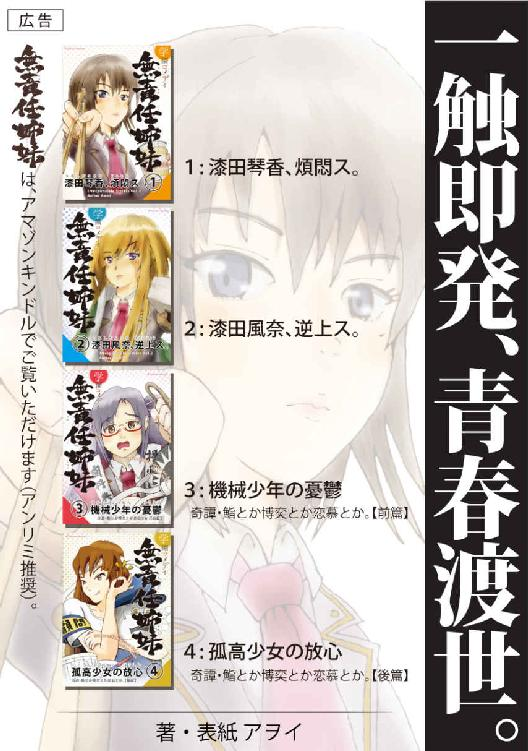

| 学園コメディ無責任姉妹 1: 漆田琴香、煩悶ス。 | |
| 小林アヲイ | |
| Sakura novels (2015) | |
学園コメディ 無責任姉妹 １
漆田琴香、煩悶ス。
著者 アヲイ
はじめに
このたびは「学園コメディ無責任姉妹」シリーズをご購入いただき、ありがとうございます。
・この書籍の無断複製および再配布等は法律で固く禁じられています。
・物語はフィクションです。登場する全ての人物・団体等は架空のものです。
それでは、最後までたっぷりとお楽しみください。


学園コメディ 無責任姉妹 １
漆田琴香、煩悶ス。
著者 アヲイ
１
「このままじゃ、まずい」
生徒会室にたった独り佇むその男子生徒は、腕組みして顔を顰めた。
詰襟、刈り上げ、くっきりとした眉。厚い背中、錨型の肩、太い首筋――頑丈な肉体を包みこむ紺色の制服は、名門の知性と威厳をもってしても、その男の苦悩を隠し通すことができずにいた。
その部屋の造りは、生徒会室とは名ばかりの、ごく普通の教室だった。一号棟校舎の三階に位置し、窓からの視界は開けている。校庭の向こう側には桜並木が、さらにその向こうには校門が見え、そのまた向こうに市街地が広がっている。部屋の内部に目を移すと、長机が二本、パイプ椅子が四脚。それ以外は何も無い。本来普通の教室で見受けられる、一人用の学習机や椅子の類は一つも無い。
放課後の生徒会室は、春の柔らかい日差しを受けて生温かった。西日は室内に漂う埃を浮かび上がらせ、淀みつつ対流する空気の流れを見せている。男子生徒の影は、生徒会室の床に黒々と伸びていた。黒い輪郭は彼の体格をそのまま骨太になぞり、武骨な性格まで描き出していた。
「うーん......」
男の眉間には、深い皺が寄っていた。
彼の頭の中には大きな懸念が渦巻いていた。その正体は、一週間後に迫った生徒会長選挙に野党「Ｃ・ランフリー高等学校総合連合会（略称：ラ高総連）」の仕掛けてきた二つの戦略だった。一つは、連中が選挙応援に本校在籍する人気沸騰中の現役高校生モデル・立河団十郎を起用したこと、もう一つは、男がかつて不良だったというゴシップを広めてイメージダウンを図っていることである。
――現役モデルで女子票を固めにいくのはまだ良しとして、俺個人の過去まで引っ張り出すとは、卑怯な真似をしやがる。
選挙間近になって意外な戦術に出たラ高総連に、男は面喰った。
＊
男子生徒の名は垂野正太。
私立Ｃ・ランフリー高等学校の現生徒会長で、与党「自由学生」の党首である。
党首といっても、強いリーダーシップがあるとか、政策通で抜け目が無いというわけでは無い。どちらかというと保守・穏健派で、生徒・教師・学校の三位協調路線に活路を見出そうというタイプである。信条は「無事此れ名馬」。これが学校側にいたく気に入られた、というわけだ。
二年の春に生徒会長に就任。任期満了直前の二年の三学期――つまり昨年度末に、二期目を目指すことを宣言。
普通、学校側としても「何も一人で二年もやらずとも。できるだけ多くの生徒に役職を経験させたい」と断りを入れそうなものだが、垂野に限っては、特別に学校側も応援することを非公式に匂わせていた。それだけ垂野は学校側にとって都合の好い政治家だった。といっても学校側には一票の投票権も無いので、特に彼にイニシアティブが与えられるわけでも無かった。
さて、そんな彼は、確かに野党が言うように、中学生の頃までは泣く子も黙る地元の名物不良だった。それがどういうわけか心を入れ替え、高校では生徒会長に推されるまでになった。昔の悪事はすっかり反省し、今では真面目に高校生活を送っている。
――人生は、やり直しが利くんだ。
しかし、どんなに心を入れ替えても、周囲には以前の印象が強すぎて、分かってもらえない。真面目にしても信じてもらえず、他人と同じ事をしても公平に評価してもらえない。元不良のレッテルは延々と付きまとう。
その上、かつての不良仲間や余所のシマのチンピラから嫌がらせがあり、プライドも何もかもズタズタにされてしまったことも。
でも、そんな辛酸を舐めたからこそ、今の強さがあり、誇りも生まれ、未来が見えるようになった。また、そういう苦しみを経験したことのある人間への思い入れに、並々ならぬものが生まれた。
――俺のことをどうこう言うのは構わない。だが、変われることを否定する奴らの言い草には、黙っていられない......。
「入るぞ」
ハスキーな声。前の引き戸が軋りながら桟を滑る。
垂野が振り返ると、戸口に一人の女性のシルエットが見えた。
すらりと伸びた背筋。華奢な肩、腰。肩まで伸びたストレートヘアは、わずかに外へ撥ねている。腰から下はパンツスタイルだが、その裾は不自然にふんわりと膨らんでいる。
シルエットは裾を揺らして教室に足を踏み入れた。
窓からの光が差し、彼女の表情が徐々に見えてくる。
線の強い輪郭。狡知に長けた吊り目。意地悪に笑みを漂わせる唇。【日下ひなた】――社会科教師で生徒会顧問である。
「なあんだ。先生か」
「相変わらず愛想の無い物言いだな。それでもお前は高校三年生か？」
「先生こそ校内でニッカボッカはないでしょう。少なくとも結婚適齢期の女性のする恰好じゃ」
「おっと、それ以上は言わないこった」日下の目に剣が走った。「言っとくがな、このズボンは何も好きで履いているんじゃないぞ。これは作業着だ。さっきまで花壇の清掃を行っていたから、仕方が無かったのだ」
「何で先生がそんなことを？ 美化委員の生徒にやらせればいいでしょう」
「馬鹿者。そんなことをしたら教頭と一緒に接待に出なきゃならなくなるじゃないか。ウチは私立だ。スポンサーとの大人の付き合いは不可欠。そういう時に限って女手は利用されがちなのだ。私はそういうのが大嫌いでな」
「......そうですか」
「確かに、作業をしていたら美化委員の連中が来たよ」
「でしょうね」
日下の日頃の行動パターンを思えば、花壇の崩壊は間違いない。美化委員も決死の抵抗を試みたはずだ――垂野は唾を飲んだ。
「私は言ったさ。善意でやっているだけで見返りなど求めるつもりはない、とね。だが、イヤに慎み深い奴らでな。とんでもない、結構ですと、半ベソかいて止めるんだ。そうしていたら、美化委員の一年の一人が、お前と同じようなことを言った。三〇前だとか、適齢期だとか......まあ、それなりの注意をしてやったら、分かってくれたようだったが」
日下はそこまで言うと窓の外の夕陽へ顔を向け、遠くを見るような目をした。
「まあ、そんなことはどうでもいい」日下は手近なパイプ椅子を引き寄せ、腰を下ろした。「垂野よ。今日私がここに来た理由を単刀直入に言おう」
「はい」
「お前、このままじゃ今度の選挙、負けるぞ」
「うッ......」
「さてはお前も薄々そんな気がしていたか」
「......はい」
「そうだよなあ。ラ高総連の奴ら、あんなイケメンを広告塔につけた上に、お前の中途半端にイキガッてた黒歴史を持ち出してさ」
「人の過去を勝手に黒歴史呼ばわりしないでください」
「そりゃあ、あんなエグいエピソードを聞いたら、誰だって垂野に入れたくなくなるわな」
「......はぁ」
「ともかく、このままじゃお前の再選は不可能だ。でも、学校側としては、お前に生徒会長でいてもらった方がいろいろと都合が良くてな。校長だけでなく、理事長もそう仰っておられる。
しかし学校が選挙に直接介入するわけにはいかない。どちらかの肩を持つなど、もっての他だ。だが、このままではお前の落選は必至。そこで職員会は極秘会議を開き、お前に裏からアドバイスをすることで応援することに決めた。
それで今日、この私が差し向けられたというわけだ」
「ありがとう、ございます......」垂野はぎこちなく頭を下げた。
「とにかく垂野。お前、絶対に勝て」
「はい」
「以上だ」
「え？」
「伝えたからな。じゃあ、健闘を祈る」
日下は背を向け、戸口の方へ歩いていった。
「先生、ちょっと待って！ アドバイスをくれるんじゃないンスか？」
「お前......」日下は足を止め、首を後ろに回した。「まさか、タダでアドバイスをもらえるとでも思ってるのか？」
「え、だって」
「今私が述べたのは、学校側の都合だ。私には私の都合がある。お前に言っても仕方が無いが、教師と言っても私学では所詮サラリーマン。安い給料で簡単に融通を利かせるのも癪だし、いろいろと生活もつらいのだよ」
「生徒をタカるつもりですか？」
「そんなこと言ったか？ 私は生徒会顧問。魚心あれば水心。再選したアカツキには」
「......もう、ホンット、ありえねェ！」
「おや？ どうした」
「先生だって、生徒会顧問として一年間俺のことを見てれば分かるだろう？ そうやって、俺のカラッキシな政治力を試すの、やめてくれ！」
垂野は拳で長机をガンと殴った。日下は目に鬼を漂わせ
「お前、私に喧嘩を売ろうとでも言うのか？」
「ああ、もういい！ どうせ俺は不良！ でも喧嘩なんか売らねえよ！ どうせ選挙も勝てやしねえ！ 立候補なんか撤回だ！ 何だよ、みんなイケメンに靡きやがって！ みんな腐ってるんだ！ 馬鹿馬鹿しい」
「おい、落ち着け」
「もうっ......、どうでもいいんだッ......」
垂野はうつむいて肩を落とした。
日下は笑みを浮かべ、天板のへこんだ長机に腰を乗せた。
彼女の瞳が、垂野の目の先に迫る。
「私はお前がそうやって怒るのを待っていた。お前の本気度を計らせてもらったんだよ」
「シラジラしいことを」垂野は顔を逸らす。
「しっかし、お前もだいぶ牙を抜かれたもんだな。怒っても言うことがほとんど泣き言じゃないか。それがかつて武藤田と真砂市一帯を二分して張り合った男か？」
「昔のことは、もういい」
「さっきも言った通り、私はお前を勝たせるために学校から遣わされたんだ。お前には今度の選挙、勝ってもらう。例えお前が死んでもな」
「死んでもって、そんな」
「それくらいの覚悟で臨めって言ってんだよ」
「生徒会なんて、命賭けてやるようなもんでもねえし」
「馬鹿野郎」
日下は垂野に人差し指をビッと突きつけた。
「自分の命を賭ける対象をテメエで選ぼうなんざ、ガキの傲慢だ！ 今やれることに命を賭けろ。それすらできない奴が、後で大勝負が打てるタマになれるもんか！」
「でも、俺はどうせ......」
「どうせ？ 何がどうせだ。全校生徒に新しいお前を見せてみろよ。でなきゃお前、一生涯『元チンピラ』で終わっちまうぞ。それでもいいのか？」
「......い、い」
「どうだ？ やるか？ 返事をしろ、ァア!?」
「......分かりました」
「フッ。いい子だ」
日下は微笑んだ。華奢な肩から細い腕を伸ばし、垂野の短く刈り上げた頭を撫で、
「さっきみたいな泣き言は、二度と言うんじゃねぇぞ」
ここで私立Ｃ・ランフリー高等学校の生徒会について簡単に説明しておこう。
私立Ｃ・ランフリー高等学校の春は、生徒会長選挙で幕を開ける。
この学校の生徒会は一般の高校のそれとは性格を異にしている。国内外に七十二の分校を持つ巨大学園は、学校一つ一つの規模が大きい。一つの学校につき一学年二〇クラス。一クラス四〇人なので、生徒の総数は二四〇〇人に及ぶ。これだけの数の学生を束ねようとする生徒会だから、生徒会自体が一般の学校と同じ機構では機能しえない。
その上、学校の教育方針は「自由教育」。方針などと呼べば聞こえはいいが、実情は放置放任、校名通りの「知らんふり」。生徒会は任されるだけでなく自由な活動を許されると同時に、自立した精神までも要求されていた。
私立Ｃ・ランフリー高等学校生徒会の最大の特色は、議院内閣制だ。
生徒会は生徒会議会によって運営される。二年・三年生のクラスは二人ずつ、一年生は一人ずつ生徒会議員を選出し、生徒会議会に送り込む。総勢一〇〇人。議会は二大政党制で、一〇〇人の議員は与野党いずれかの政党に属する。
年度最初の生徒会議会で、各政党は生徒会長候補者を一名ずつ擁立し、直ちに選挙運動に入る。選挙は投票による直接選挙制で、選挙運動期間は立会演説会を皮切りに一週間続き、最終日が投票日。即日開票され、生徒会長が決定することになる。
なぜこのような制度が導入されているのか。学校側の説明によると、生徒が社会に出た時にすぐに政治に馴染めるようにという教育的配慮と言われているが、本当は、あまりにも大きすぎる生徒数と親の数に学校側が対応しきれないためで、生徒に自治を明け渡すことで、巨大なＰＴＡのガス抜きを行おうというのが学校側の本音であろう。生徒さえ味方につけておけば、ＰＴＡだって大人しくなる。なんせ高校生なので、ほとんどが反抗期真っ盛り。生徒とＰＴＡがタッグを組むことなんて、平時においてはほとんどありえない。
そういう意味からも、学校側が「アメ」として生徒会に与えている権力は大きい。主なものを挙げると、文化祭の完全なる自治、年に一度の自由イベント企画、学校の経営者と同席する修学旅行先の選定委員会で議長を務める権利。この三つだ。特に前者二つは高額な予算がついており、その額は南太平洋の小さな島国の国家予算に匹敵する規模だった。
この生徒会スタイルは、世間的には極めて評判が高かった。私立Ｃ・ランフリー高等学校で生徒会に関与していたという経歴は、社会に出てから有利な評価につながるということで、内申点による大学推薦を勝ち取ろうと考える生徒たちは努めて学内政治活動に色気を出した。
こういう傾向からも、私立Ｃ・ランフリー高等学校の春の生徒会選挙は、例年活況なのである――。
日下はへこんだ机から降り、パイプ椅子に掛けなおした。
垂野は黒板に数値や図表を示し、選挙の現状を説明する。
どんな選挙も、争点を明らかにしなければ票は動かない。
垂野ら「自由学生」の問題点は、生徒たちの生徒会活動への期待値が低いために、現職の強みが生かされないことだった。かといって、野党「ラ高総連」同様、煽り選挙をするにも材料は無い。
「要は、こういうことだ」日下はニッカボッカの脚を組んで座っていた。
「理念や公約による選別が行われない選挙なんて、所詮は美人コンテストみたいなもので、結局票はイメージの良い方に流れる。つまりお前はイメージアップを図るべきだ」
「しかし、先生」垂野の表情は暗かった。「俺のイメージは完全に元不良。野党のせいで最悪です」
「お前のイメージじゃなくて、与党『自由学生』のイメージを向上させればいい。そしたらお前への票につながる」
「政党のイメージって、政策の質ってことでしょう？ 理念や公約に興味の無い生徒たちの好奇心の対象になりますかね」
「それは正攻法だ。それでは勝てない。別のやり方でイメージを上げるのだ」
「どうやるんです？」
「政党のイメージガールを打ち立てる。カリスマ女子を広告塔に起用して、男性票を固めるのだ。ウチの学校は男子の数が女子より若干多い。これで野党の立河団十郎にも対抗できるぞ」
「はあ......」
「何のため息だ？」
「俺、あんまり女子に知り合いがいなくって」
「だろうな。お前みたいな図体はデカいが案外キモの小さい元チンピラなんて、誰が」
「......どうせ俺は」
「ああ、すまんすまん。お前を見ていると、ついつい追い詰めたくなってな。
ところでお前、【漆田琴香】という三年の女子の名を聞いたことがあるか？」
「うッ、漆田琴香......だ、と......」
垂野の表情が一瞬にして引き攣る。
「おお、知っているようだな」
「し、知っているも何も、漆田琴香と言えば、あの有名な『ロイヤルミルクティー部』の......」
「そうだ。キュートなネーミングながら校内では軍閥とさえ呼ばれる『ロイヤルミルクティー部』。その総統だ。アイツをこっち側に取り込めば、十分立河に対抗できるだろう。しかも漆田琴香は女子にもファンが多い。もしかしたら野党票の切り崩しもできるかもしれん」
「しかし、漆田琴香ほどの人物が味方になってくれるかどうか」
「じゃあ、何か別のアイデアがあるのか？」
「いや、その案を聞いてしまったら、他のどんな案も霞んでしまう......」
「だろ？」
日下は微笑んだ。
――ゴクリ。
垂野のこめかみを一筋の汗がツーッと下へ抜け、顎の先から床へ落ちていった。
２
放課後の談話室はガールズトークのるつぼだ。
私立Ｃ・ランフリー高等学校の生徒談話室は、校舎の二階、中央階段のすぐ右隣にある。
広さはちょうど教室一つ分。というより元々は一般の教室だった部屋を開放している。部屋に入ると、室内には四脚のチェアがついた小さなテーブルセットが八セット。どれも別個の女子グループによって占拠され、かしましいトークの核を形成している。黒板のあるべき壁際には自販機が端から端まで並んでいる。後ろの壁際にはベンチが並べられている。背もたれにデカデカと乳製品会社の名前が書かれた三人掛けタイプだ。ここにも女子グループがひしめき合っている。
女子、女子。女子女子女子。
そう、この部屋は談話室という温かな名前を有しているにもかかわらず、その実態は女子の、女子による、女子のための聖域として、暗黙の自治が敷かれている領域だった。
ここへは男子生徒の入り込む余地はまったくない。この領域に踏み込む男子は、よほど誰かに用向きがあるか、あるいは学園の通念を全く知らないかのいずれかだ。そのため、男子は後ろの自販機でジュースを買うことができず、自販機の売り上げは芳しくないとのことだった。
さて、女子とは小規模な徒党を組む生き物である。徒党同士は着かず離れずの距離を保ち、反目こそせぬものの、何かしら理由をつけて絶対的な優越を譲らない性質を持っている。談話室の八つのテーブルセットに見える力学にもそれがよく表れている。それぞれの集団はコロニーを形成し、有意識・無意識に互いを比較しつつ、連帯を確立している。
ちょっと耳を澄ましてみよう。
「ちょっとあのコ、やりすぎでしょ」
「何アレ？ 高校デビュー？」
「マジ、ありえない」
「ウチらでは考えられないね」
「ちょっと懲らしめる？」
これらの交感は、女子徒党における同一性の確認であり、彼女らとしては「フツー」なのである。
かといって、全ての女子徒党が同じような演算式で自他を計り合い、連帯を深めているわけでは無い。中には全くそうでない連中も存在する。
たとえば、一番隅の、窓際の円テーブルに目を向けてみよう。
二人の女子が向かい合って掛けている。
一人は眼鏡のそばかす顔で、人の好さげな真面目系少女。常に穏やかに微笑んでいるが、相手の顔色を窺うところはほとんど習慣化しており、本人にはその意識がほとんど無いだろう。つまり物事に近視眼的で、いわゆる「天然」であることは疑いない。
もう一人は、ライトブラウンに染めたストレートヘアを白無垢綿帽子の様に大きく丸く膨らませ、耳の後ろに通した色白少女。こちらは目鼻立ちがすらりとして独特の華やかさがあり、いかにも男子の人気を集めそうな美貌だ。
しかし目元には得もいわれぬ不穏な鋭さがあり、眼鏡系真面目少女とすると接しづらい雰囲気が漂っている。
二人の眼差しは、他のテーブルの女子らとは明らかに異なっていた。鋭さと恍惚が掛け合わさり、独特の空気を醸していた。
テーブルに広げられた数冊のムック本。タイトルに目を遣ると「週刊城郭」「月刊江戸風俗」など。その脇には「別冊宝箱」なる歴史マニア向けの分厚い本。
二年生の彼女らが満員の談話室で四人掛けのチェアを半分余らせ、なおかつ三年生女子の嫌悪の視線を免れているのは、ひとえに二人の発する「オタクオーラ」によるものだった。
「ねえ、典佳、見てこれ！『親孝行』だってさ！」
ライトブラウンの色白少女は、一冊のムック本を広げ、眼鏡少女の方へ向けた。彼女が鼻息を荒げて指さしたイラストは奇妙なものだった。
ボロをまとった老人が、胸元に若者の上半身をかたどった人形を据え、おまけに両脇に一本ずつ足の形をした布の筒を抱えている。
「うわ！ 何それ？ 風奈ちゃん、そんなのよく見つけたね」
「へっへっへーっ！」
眼鏡少女の感心した様子に、色白少女はますます鼻息を荒げて満足気だった。
眼鏡少女の名は【関丹典佳】、色白少女の名は【漆田風奈】。
私立Ｃ・ランフリー高等学校二年Ａ組のクラスメートである。
二人は毎日、放課後になると早めに談話室を訪れ、テーブルセットの一つを占拠し、このように「江戸風俗文化」についてオタク的知識を披露しあうのが趣味だった。
「風奈ちゃん、それってどういう職業なの？」
「えとね、この本によるとね......」
風奈はムック本を自分に向け、イラストの下のキャプションを読み上げた。
「ええと――男は上半身のみの人形を巧みに使い、まるで若者が老人を背負っている様に見せながら『親孝行でござい、親孝行でござい』と言って市中を練り歩き、小銭をせびる......って、コレ、インチキじゃん」
「うわあ、あざといね」
二人は目を合わせ、笑顔を輝かせてキャッキャとはしゃいだ。周辺のテーブルにいた他の女子らは、二人から聞こえてくる会話にまったく共感をもてず、むしろ不気味で近寄りがたいものを感じていた。
しかし典佳と風奈はお構いなしだ。
「風奈ちゃん、インチキなら私も見つけたよ。ホラ！」
「うわ！ えと『願人坊主』？ これまた濃いーわ！」
話題のわりに、二人の歴史の点数は決して良くはなかった。彼女らの愛好したのは、歴史の中でもとりわけ胡散臭いネタに偏っており、試験には絶対出ない類のものばかりだった。
二人がこのような歴史のニッチに強い関心を持ったのは何故だろう。それは誰にも分からなかったし、本人たちも分かっていなかった。
「......で、その『願人坊主』は何をするの？」
「ええとね――民家の軒先に立ち、戸の隙間から仏壇を覗いてその家の宗旨を知ると、それにあわせて念仏や題目、あるいは真言を唱える。そして布施をせびる――つまり、南無阿弥陀仏でも南無妙法蓮華経でもなんでもやるんだって」
「すごいじゃん！ キャリア関係なしの携帯充電器みたいね！」
「あは、良い例えだね。でも、この本によると、彼らは僧侶の免許を持っていないタダの乞食なんだって」
「え？ マジ？ アタシだったら追い返して塩まくわ」
「私もー。御利益無いよね」
現代という時代は、人の心を潤す何かを失っている。人々は物心共に満たされて、夢を見ようにも理想に飢えているかのようだ。そんな砂漠の様な時代に青春を迎えた若者たち。彼女らの精神は、実は心の渇きを潤そうとして、非科学的なチョンマゲ時代の錯乱した現象に、生々しい人間性を求めているのかもしれない。そして昨今の懐古趣味や歴史ブームも、もしかしたら二人の価値観同様、背後にそんな想いを願っているのかもしれない。
ま、ややこしい物言いはさておき、とにかく二人は仲良しで、今日も「きわどい・あざとい・えげつない」が三拍子揃った江戸風俗談義に夢中なのであった。
さて、その日の談話室も、いつもと同じ様に女子の熱気で満たされていた。
典佳と風奈は『親孝行』や『願人坊主』よりもいかがわしい江戸の職業は無いか、手元の資料を漁っていた。
ふと、典佳が
「ね、風奈ちゃん。あそこ見て」
そう言って談話室の一角を指さした。
風奈が目を遣ると、幾人かの女子がワイワイ寄り集まって嬌声を挙げている。集団の中から、ピョコンと一つ頭が飛び出している。それは見たことのない男子の頭だった。
「ここに男子が来るなんて珍しいね。あれ誰？」
「風奈ちゃん知らないの？ 立河君だよ」
「立河君？」
「私たちと同じ二年生で、現役の高校生モデルなんだよ。雑誌にもいろいろ載ってるよ」
「げ。ホントに？ そんな奴って少女マンガにしかいないと思ってた」
「本当だよ。ほら、みんな集まってる。確かにイケメンだよねえ」
「そっかなぁ......」
風奈は目を凝らし、立河なる男の顔を見た。
確かにすっきりした輪郭にまとまった目鼻立ち。いかにも涼しげで邪気が無い。身体の具合は群がる女子どものためによく分からないが、頭の見え方からして背はだいぶ高いようだ。
――ま、確かに、好い男ではあるな。
「立河くーん！」
「はーい」
「あ、握手して、くだ、さい」
「はいはい」
「こ、ここにサインを。脇んトコに『キョウちゃん江 ファイト』って」
「はいはい、いいよー」
「か、かか、肩組んでもらって、いいい、いいですか？」
「はい。こう？」
「あ、あの、そそそれ、う、腕組み、です」
「ああー、ごめんごめん。ジョークだよ」
「キャーッ！ 写メ撮って！ 早く！」
談話室に突如現れた学園のアイドル【立河団十郎】は、群れて押し掛ける女子たちを逐一相手しながら、まったくうろたえる様子は無かった。人気者稼業にすっかり慣れた貫禄は、なおさら女子たちを虜にした。
「くーっ！ あのカッコ良さは反則」
「こうなりゃ年下も悪くないわね」
普段はリーダー面を決め込んで、お高く止まっている三年の女子たちも、立河のオーラにすっかりほだされている。
「皆さん、どうもありがとう。先輩方もありがとうございます」
立河は周囲に万遍なく声を掛け、一通り要望に応えた。
やがて頃合いを見計らい、一冊のバインダーを取り出すと、
「皆さん、ちょっと聞いてください」丁寧に願い出た。
「団サマのお触れよ！」
「シーッ！ みんな静かに！」
談話室はたちまち静かになる。
立河は一同に語り掛ける。
「実は、お願いがあります。今度の生徒会長選挙で、僕は幼馴染の【仙田空也】君を応援しています。学年は僕の一つ上なんだけど、昔っからの友だちづきあいで、今さら『さん』付けなんかできないんですが、本当に優秀で、いい人なんです。僕が保証します。だから皆さんにも、今度の選挙ではぜひ彼を応援してほしいんです」
「仙田君って、野党『ラ高総連』の？」
「そうです。彼をこのまま野党にしておくのはもったいない！ 僕のファンで仙田君を応援してくれる方は、ぜひここに名前を書いてください！」
立河はそう言って、手近にいた女子にバインダーをホイと手渡した。ふいに手渡された女子は目を白黒させビックリ仰天。朦朧とした意識のまま、何とか升目に自分の名前を書きつけると、
「い、いっちばーん......」
ドサッ。
「ちょっ、キ、キョウちゃん？」
運ばれていく女子。
これが皮切りになり、他の女子たちも
「そりゃまあ、立河君が応援するっていうなら」
「一も二も無く」
「推しますわ！」
「私、二番目に書く！」
「次は私！」
「こっちにも頂戴！」
たちまち殺到する女子たち。それでも立河は慣れた様子で「はいはい、順番」と、平然と笑顔を振りまいている。
「ははーん。ありゃあプロの仕事だわ」
風奈は眉間に皺を寄せ、ギュッと腕組みをし、目の前に広がる騒乱を眺めていた。
典佳も同じ様に人だかりを見つめている。
「風奈ちゃんは、あんまり興味無いの？」
「興味？ 何の？」
「何のって。立河君、結構カッコいいじゃない」
「バカね。言ってるアンタが赤くなってどうすんのよ。典佳もサインが欲しいわけ？」
「や、そうじゃないけど」
「とにかくね、ああいう風に人が殺到する様な人間には、どっか裏があるのよ」
「え？」
「アタシの身近にも、あんな人がいるじゃない？」
「こ、琴香お姉ちゃんのこと？」
「そう」
「琴香お姉ちゃんには、裏があるのかな？」
「アリもアリ、大アリよ！」
風奈はまなじりを険しくして言った。
「琴香の奴、なぁにが『ロイヤルミルクティー部』よ。中身は自分を教祖にしたカルト教団みたいなものじゃない。あそこには『靴をお舐め』って言ったら舐めに来るような奴がいくらでもいるのよ！ ああ、キモい！」
「何だかよく分からないけど、風奈ちゃんは今でも『ロイミ部』に入れてもらえなかったこと、怒ってるのね」
「そ、そんなこと無いよ！ それに何、その変な略し方！ 一瞬イミが分かんなかった！」
「ごめん......」
「とにかく、アタシたち姉妹は、血が繋がってるってだけで、心の中は正反対なんだからね。典佳は普段琴香とどう接しているのか知らないけど、アタシには一切関係無いから！ 一切！」
「わ、分かったよ......」
風奈は姉の琴香の話になるといつもこうだ。
大嫌いと言いつつ、強く意識しているのが丸分かり。彼女にとって姉はライバルであり、超えるべき目標であり、さらに言い換えれば「憧れ」なのだ。
しかしそれを正面から突くと風奈は激高し、誰彼構わず攻撃的になる。
典佳はそれをよく知っているので、これ以上琴香の話をするのは止した。
と、その時。
「こんにちは」
ふいに脇から声を掛けられ、典佳と風奈は反射的に振り返った。
目の前に立河団十郎の姿があった。
「わ、わわ！」
典佳の喉から思わず狼狽の声が漏れた。
立河は談話室中の女子に声を掛け、最後に二人のテーブルを訪れたのだった。椅子に座る二人の視線に合わせ中腰になるあたり、その所作にはこなれたものがあった。
「こ、こここ、こにちは」
典佳はすっかり赤面し、目は眼鏡越しに泳いだ。
「ごめん。いきなり声を掛けちゃったから、驚いたよね。こちらの方も、こんにちは」
立河は首を回し、風奈の顔を見た。
風奈の目に、端正な現役モデルの顔が映った。
――くッ......コイツ、眩しい！ 笑顔が六〇〇〇ルーメンくらいある！
「あの......怒ってる......のかな？」立河は口ごもった。
風奈は首を激しく横に振り
「いやいやいや！ いきなり声掛けられたから、ちょっとびっくりしただけで......」
「あ、あの、ホントです」典佳が割り込んだ。「私たち、ここでずっと本を読んでいたので、あなたに全然気が付かなかったんです」
――嘘つけ。トロッとした目で見てたくせに！
風奈は心の中で舌打ちした。が、そんな様子はおくびにも出さず、立河を向き直り居ずまいを正すと、
「で、タテカワ君......だったかしら？ 何かご用？」
普段よりいくらか高めの声で尋ねた。すると立河は顔を明るくし
「おや？ 嬉しいな。僕の名前を知っているの？」
「あ、あれ？ えと、あ、あの」
両耳がカッと熱くなる。紅潮する頬。
典佳に目を遣ると、うつむいて懸命に笑いを堪えている。
――クッソ、これじゃまるでアタシがコイツのファンみたいじゃないか！
「あ、あなたは、モデルで、い、いろんな本とか、名前が出てるから」
「おお、見てくれてるんだ、ありがとう。生意気な様だけど、そんなお仕事をさせてもらっています。あの、良かったら、二人の名前を聞いてもいいかな？」
「ア、アタシは漆田風奈」
「私、関丹典佳、です」
「ふんふん。漆田さんって、もしかして三年の琴香さんの」
「い、妹よ」
「やっぱり！ お姉さん、すごい人だよね」
「え、ええ......まぁ」
「改めまして、僕は二年の立河団十郎と言います」
「ど、ども。アタシたちも、二年だよ」
「そうなんだ？ じゃあ、なおさらよろしく！」
――こいつ、下の名前は『ダンジュウロウ』って言うのか！ まるで落語と歌舞伎の大名跡を組み合わせた様なすごい名前だな！
風奈は相手の名前にそそられるものを感じた。
「ところで、今日は折り入ってお願いがあって」立河は本題に入った。「実は、次の生徒会長選挙で、僕の幼馴染の仙田君を応援してほしいんだ」
風奈は一見真剣に聞き入るようだったが、頭の中は全く違うことを考えていた。
――こいつの親はどんな人間なんだ？ ダンジュウロウなんて名前は畏れ多くてなかなかつけられるもんじゃない。少なくとも古典芸能ファンなのは間違いないな......。
「仙田君は、野党『ラ高総連』の党首。彼は生徒と学校の未来をキチンと考えている。たとえば、僕らが卒業後も学校とつながり続ける仕組みも考えている」
――アタシの江戸好きは、落語とか吉原とか、どちらかというと文化の系統。一方、典佳は城郭や武将が専門。だから典佳にこの名前のスバラシさは分かんないだろうなぁ......。
「僕は今回、モデルの仕事を少し休業して、仙田君の専属応援団に名乗り出た。僕は彼のことを信頼してるし、何よりも、共に同じ高校時代を過ごしたという手応えが欲しくてね」
――おまけにこの男、モデルをやっているだけに、地味な所作にも人の目を惹きつける何かを持っている。それは、寄席でも舞台でも活きる存在感ね......。
「あの、漆田さん。聞いてる？」
「え？ あ、はいはいっ！」
風奈はビクッとして我に返った。
「もう、ダメだよ、風奈ちゃん！」典佳は眉を吊り上げて言った。「人が話をしている時は、その人の目を見る！」
「わ、分かってるよ！」
「立河君が話してた時、全然別の事を考えてたでしょ！」
「そんなことない！」
「いーや、上の空だった！」
「何を証拠に？」
「ヨダレが出てたもん！」
「え？」慌てて袖口で口元を拭う。
「ウソだよ」
――クッソ眼鏡！
歯噛みして悔しがる風奈に、典佳はすっかり呆れた様子だ。
「とにかく、人の話はちゃんと聞く。マナーだよ」
「マナーとか言うけどさ。典佳だって、さっき『全然気づかなかった』とかウソ言って」
「ちょ、それは関係無いでしょ！」
「ある！」
「ない！」
「ある！」
「あるって何が？」
「あれ？ えと。ん？ なんだっけ？」
「ねえ。これってもしかして『親孝行』？」
立河の声が割り込んだ。二人は声の方を振り向いた。立河はテーブルに広げられた数冊の江戸ムック本を眺めていた。その目は実に楽しげだった。
「あ、こっちのこれは『願人坊主』でしょ」
「た、立河君、歴史好きなの？」典佳が尋ねると
「うん」立河は頭を上げ、明るく答えた。「実はこう見えて落語が好きでね。小さい頃から父親とよく観てたんだ。だから結構詳しいよ。
たとえば『親孝行』だったら、お奉行様からご褒美をもらう『孝行糖』って噺があるし、『願人坊主』は『黄金餅』とか『らくだ』とか、たくさんの名人が十八番にしている噺がある」
――こいつ、デキる......しかも、ナカナカのマニア路線。
「あなた、かなり詳しいんだね」
風奈の問いに、立河は嬉しそうだ。
「まあね。でも、高校生で落語好きとか、ほとんどいないでしょ。女子ならなおさら。だから、今日は漆田さんや関丹さんとか、江戸時代ファンの女子と出会えて嬉しいよ」
「わ、私も、立河クンと趣味が近くて、嬉しい......かな？」
「おーっと、典佳、ちょっと待って。アンタは江戸フェチとはいえ、落語は専門外でしょ」
「そ、そうだけど......」
「言っとくけどね。落語は江戸時代ばかりじゃないわ。いわゆる古典落語と呼ばれるジャンルは、大まかに言って、安土桃山の曽呂利新左エ門から、明治の三遊亭圓朝まで含まれる。そうなると、とてもアンタじゃ手におえないはずよ」
「ふぇえ、そんなぁ」
「第一、彼は落語好きとはいっても、江戸時代好きとは言ってない。つまり、立河君と典佳との間で共通する部分は、アンタが思っているよりずっと狭い！」
「まあまあ、二人とも」立河が苦笑して割って入る。「漆田さんの知識はすごいと思うけど、落語は基本、楽しむもの。それはきっと江戸時代の歴史や文化を紐解くことも同じでしょう？ だから関丹さんを責めるのはやめようよ」
すると
「......ほう。立河、アンタ結構なお人好しなのね」
風奈の声が一段低い調子に変わった。
――うわぁ、風奈ちゃんが豹変した！
――突然呼び捨て？
風奈の浮かべた薄笑みには、こぼれんばかりの悪意がこめられていた。
「そうやって優しい顔して、どんどん女の子を味方につけていくってわけか」
「き、急に何を言い出すんだい？」
「アンタ、これから選挙で神輿担ごうってんでしょ？ そんな風にナンパな甘っちょろいやり方で勝てると思ってるわけ？」
「いや、そういうわけじゃ」
「黙んな！ 選挙ってのはね、誰かを通すモンじゃなくて、誰かを落とすモンなんだよ！」
――なッ!?
立河は、風奈の一言に目の覚める思いがした。
確かに、彼はこの瞬間まで、選挙応援なんて候補者の横に立ってニコニコしていればいい、後は署名をさせて参加意識を植え付ければ十分――そんな風に思っていた。候補者仙田に頼まれ、お人好しゆえに、安易な気持ちで受けた広告塔だった。
――この人、タダモノじゃない！
真剣な眼差しで風奈を見つめる立河。喉が鳴り、こめかみを汗が伝う。
――風奈ちゃんったら、また知った風なことを......。
典佳がそう思った瞬間、もう風奈は口を開いていた。
「そのカオは、どうやら目が覚めた様ね」
「あの、うん......」
「アンタがどうしてもと言うなら、その選挙の応援、アタシが片棒担いでやってもいいわ」
「え？」
「ただし、条件がある」
「な、何？」
「アタシはアタシのやりたい様にやらせてもらう。アタシを選挙参謀に任命すること！ それが条件！」
「そ、それなら大丈夫さ！」立河は身を乗り出して肯じた。「僕から頼めば、仙田君はきっとゴーサインを出す。それじゃ、たった今から漆田さんは『ラ高総連』選挙対策本部長だよ」
「よっしゃあ。今日からビッシビシ行くからな！」
風奈は腰に手を当て高笑い。
――ああ、引き受けちゃった......。
典佳は視線を落とした。
風奈はしばしばこんな風に、校内で派手に何かを企てて実行しようとする。これもひとえに姉・琴香への対抗心なのだった。風奈自身は、毎回その時の思い付きで動いているだけだと思っているだろう。しかし、彼女の自我の奥底に、姉への徹底したライバル意識があるのは、典佳にはよく分かった。
そしてさらに、こういう時は風奈と行動しないのが身のためであることも、経験上よく知っている。
「もちろん典佳も参加するわよね？」
「私は、ちょっと......」
「ちょっとって、これだけみんなの気持ちが高まってるっていうのに、何を悠長に構えているわけ？」
「だって、選挙運動って、ほとんど放課後でしょ。私、家の手伝いとかあって」
典佳の実家はパン屋だ。
「そうか。それじゃ仕方ないか」
「ごめん。立河クン......」
「関丹さん、いいよ。ありがとう」
立河には申し訳なかったが、典佳は実家がパン屋で良かったと心底思った。
――立河クンも、風奈ちゃんを引き込んできっと後悔する日が来ると思う。だからたまには、様子を見に行くことにしよう。場合によっては、風奈ちゃんを止められるのは私だけのこともあるし......。
「そうと決まったら、さっそく活動よ。立候補者は、えーと、仙田とか言ったっけ？ 一応その人に会っとかなきゃいけないわね。どこにいるの？」
「今の時間は『ラ高総連』の部屋にいるよ」
「それ、どこにあるの？」
「別館三階の『洗練アイロン部』の部室がそれなんだ」
「『洗練アイロン部』？ はぁ？ なにそれ？ ウチの学校に、そんな変な名前の部活があったっけ？」
「結構有名だよ。洗練アイロン部は私立Ｃ・ランフリー高等学校の創立以来続く、数少ない伝統サロンだよ」
「へぇ。有名なの？ それは知らなかった。落研すらないっつーのに、変なトコが栄えてるのね。典佳は知ってた？」
「えと、うん」
「知らないのはアタシだけか。ま、面白そうね。ますます楽しみだわ。じゃ、行くか」
そう言って風奈は立河の肩を一つドスンとどやし、
「じゃ、典佳、ココ片付けといてね。また明日♪」
立河を引き連れ、談話室から出ていった。
テーブルには典佳がひとり、残された。
彼女はどっと疲れを覚え、椅子に腰を下ろした。
ふと周りに目を遣る。群がる女子たちの冷ややかな視線がこちらに集中している。立河を独占した妬みのレーザーが、鋭く身を刺す。
―――私も二人についてここを出れば良かった......。
典佳はテーブルの上の本をソソクサと鞄にしまった。入りきらなかった風奈の本は、重ねて小脇に抱え、いそいそと談話室から廊下へ出た。
立河と風奈が去ってから時間はさほど経過していなかったが、二人の姿はもうどこにも見当たらなかった。
３
『お前、ホントにつまんねえな。将来公務員とかじゃないの？』
一時間前、担任の日下ひなたに言われた言葉が耳に蘇る。
――ウチの親、二人とも公務員なんだけどなぁ......。
二年生の【律木公太郎】は、三人掛けのベンチの左端に律儀に小さく腰掛けた。そして眼鏡を外し、親指の付け根で目頭を圧した。
放課後の中庭、陽の当たらない花壇の脇のベンチ。
奥に両面茶道部の茶室が見える。陰に佇むそれは、まるでこちらを見据えているようだ。
――こんな文句も、今ごろ頭の中で言ったって仕方が無いよなぁ。言うならちゃんと先生の前で言わなきゃ。でも、言えないんだよなぁ......。
進路指導調査・個人面談。
それが、つい先刻、律木を落胆させた舞台である。
私立Ｃ・ランフリー高等学校では二年生進級直後、学年全員に進路志望調査を行う。ほとんどの生徒が進学を志す中、稀に就職を希望する者もいる。学校はそういう生徒を把握し、三年次のクラス編成に活かすと共に、進学希望の生徒についてはその成績を分析し、ランクに応じたクラス編成とカリキュラムを構築する。
生徒の大学進学率は学校全体の評価にもつながるため、教師もウカウカしていられない。成績が悪いにもかかわらず大学受験を考えている生徒がいると、早めにやる気を挫いて就職活動に導く必要がある。そうしなければ、教師自身にとって出世の足枷になるのだ。
律木公太郎も、多くの生徒同様、進学を希望していた。現時点で成績は中の上といったところ。選ばなければ、そこそこの国立大学へ進学できる可能性はあった。
しかし、このところ成績が下降気味になっていた。模擬試験ではついこの間まで志望大学で軽くＡ判定を叩きだしていたのが、最近ではＢも怪しい。それはひとえに、これまで部活に熱中していた生徒たちの一部（つまりレギュラーになれないと判明し、はやめに見切りをつけたスポーツ部員共）が、そろそろ受験に向けて頑張りだしたことも大きいが、それだけでないことは律木自身も分かっていた。
――人生って、何の意味があるんだろう......。
嗚呼、此のむず痒く、青臭い憂鬱。
それは、いわゆる「虚無」の病だった。
いかにも青春と呼ぶべき漠然とした人生の不安が、まるで春の嵐の様に、突然彼の胸に吹き荒んだ。彼は尾崎豊を知らなかったし、「汚れっちまった悲しみに」も知らなかった。どちらかというと、シロはシロ、クロはクロと、物事に頑なで、疑うことのない性格だった。だからこの寄る辺の無い不安が突然我が身を襲った時には、ホトホト参った。正直、勉強に障るだけでなく、日常生活自体も面白く無く、つらいのだった。
――しっかし、受験前に何というタイミングの悪さだろう。
律木が自分の面倒臭さに辟易していたところで、ちょうど進路指導調査の個人面談が行われたのである。
『お前の成績、最近暴落してるぞ』
一時間前、進路指導室で日下先生の発した第一声が、これだった。
先週から予定されていた進路指導調査。きっと言われると思っていた。しかし、実際に言われると、やはりなかなかキツい。
律木が何も言えずにいると、日下は一つため息をつき
『もっともお前はいつも授業態度が真面目で、基礎はできているから、不調はきっと一時的なものだろう。おそらく、少し体調が悪いとか、精神的に疲れがきているとか。そうじゃないか？』
『はぁ、よく分かりませんが......。とにかく、ここのところ勉強に手がつかなくって』
『お？ 恋でもしたか？』
『そうじゃないです』
『なぁんだ』
『そんな、つまらなさそうにしないでください』
『律木、お前、ホントにつまんねえな。将来公務員とかじゃないの？』
『お、仰る意味が分かりませんが......』
『そういう、なんちゅうか融通の利かないところが、ホンット、お前の悪いところだ。お前は冗談とか言ったりするのか？』
『冗談を言う機会が、あまりないもので』
『機会？ 冗談なんてのは、言う側が会話のタイミングを見て積極的に挟み込んでいくもんだ。一体どこの誰が『はい、今です』なんて言って冗談のタイミングを教えてくれるもんか。ていうか、とにかく、お前は固すぎる。真面目なのはいいことだが、真面目すぎるのは考え物だぞ。ちょっとは遊んだ方がいい』
『遊ぶって、何も高二の大事な時期に、そんな』
『そこなんだよ。お前のそういう物の考え方に問題がある。いいか？ 本当に要領のいい奴は、勉強ばかりじゃなく、部活にも遊びにもエネルギーを注入するんだ。何か一つだけだと飽きがきたり、行き詰ったりする。今のお前を見てみろ。勉強一つきりじゃないか』
『はぁ』
『それだと勉強に行き詰ったら、高校生活全体が行き詰った感じになるだろ』
『......ええ』
『高校生活は人生に一度しかないんだぞ。バイトとか恋愛とか、打ち込むものを持て。まだ遅くはない。いろいろやってみたらどうだ』
そこまで言うと、日下は生徒会室に用事があると言い残し、進路指導室から出ていった。
それで個人面談はお開きに。
律木は所在無く中庭に出て、いましがた日下と交わしたやりとりを思い出していた――というわけだ。
――打ち込むもの、......か。
律木の脳内に、同じ高校に通う姉の顔が浮かぶ。
名は【律木那鼓】。公太郎より年は一つ上の三年生。
小さい頃から剣道に励み、高校に入っても続け、今では剣道部の主将を務めている。男女混成のスポーツ部で女子が主将を務めた例は、私立Ｃ・ランフリー高等学校創立以来、他に無い。部活で飽き足らず町道場にも通うほどの稽古の虫で、その結果、出場する大会は軒並み優勝。剣豪少女の名をほしいままにしている。
また、学業も優秀で、剣道推薦でなくとも一般試験で普通に有名大学を目指せるだけの学力を持っている。同学年のカリスマ・漆田琴香を常にライバル視し、テストの度に成績の順位で上位を争っている。
――姉さんにとって漆田先輩の存在は大きい。ライバルに負けたくないから努力するわけだ。僕にもライバルがいたらなぁ。ライバルがいれば、人生の意味を考えたりするヒマも無くなるだろうし。
「でもなぁ。はぁ......」
律木はため息をついた。
ふと、背後から甲高い声が聞こえてきた。
律木は首を回して振り返り、声のした三階の渡り廊下のあたりを見上げた。
すると、同じクラスの漆田風奈が、同学年の立河を引きつれ、大声で何かを言いながら歩いているのが見えた。
「――で、そいつが勝ったらアタシに何かくれるの？」
「――え？ 何これ、タダなの？ はぁ？」
「――そうはいかないわ。今さら何言ってんのよ」
聞こえてくるのは漆田の声ばかりだった。声は徐々に小さくなり、二人が渡り廊下から別館に入ると、そのまま聞こえなくなった。
――ウチのクラスの漆田さんは、そんなに成績良くないし、立河はすでに現役モデルとして仕事をしてて、もはや普通の高校生とは言えない。あの二人だと、あんまりライバルって感じが湧かないな。
――いや、むしろ今の様子じゃ、漆田さんも立河君も高校生活を謳歌しているようで、僕がライバルを名乗っても、二人とも乗ってくれなさそうだな。
――こうなると、当たり前の高校生らしく悩んでいる僕が、一番馬鹿らしく見える。
――あーあ。図書室にでも、行くかぁ......。
律木の背中が、中庭から薄ぼんやりと消えていった。
◇Ｃラ高校部活総覧
- 【ロイヤルミルクティー部／略称：ロイミ部】
- 私たち「ロイヤルミルクティー部」は生まれて一年半のまだ若いサークルです。一昨年、両面茶道部より分派した紅茶研究会内の一派「ロイヤルミルクティー愛好会」が独立し、設立されました。設立以来、漆田琴香部長を中心に、みんな仲良く部活を楽しんでいます。
当部は設立当初より部室があります。元々第二音楽室として使われていた部屋です。カーペット敷き・防音壁構造の、静かで落ち着いた部屋です。
さらに当部の部室で一番の自慢は、部長室があることです。元々は音楽教官室として使われていた部屋で、広さは十六畳程度ながら、校長室並みの調度が整えられ、いつなんどきのご来賓にも対応ができます。学内の一般サークルで部長室があるのは当部ただ一つと言う事実は、私たちの誇りであり、漆田部長への各方面からの敬意がその特別性を歓迎している証拠でもあります。
当部の基本活動は、紅茶文化の研究――というのはもちろんですが、実のところは、ロイヤルミルクティーを楽しみながらお喋りに耽るという、社交サロン的嗜好が中心と言えるでしょう。そもそも当部の前身である「ロイミ愛好会」は、森羅万象に精通し現代の虚空蔵菩薩ともたとえられる漆田琴香部長とお茶をしながらお話をするということから始まりました。ですから、知を愛求する姿勢こそが当部の原風景であり、活動の本質ともいえるのです。
尚、当部への入会は、現会員及び教員三名連署による推薦を必要とします。その後、面接による選考会を経て、晴れて会員となることができます。
皆さんもぜひ、「ロイミ」で高校生活を謳歌しませんか。
４
日下ひなたの手紙にざっと目を通した【漆田琴香】の表情は、一瞬にして嫌悪に歪んだ。
まぶたは苛立ちにヒクつき、唇は頑なに結ばれ、怒りによって小刻みに震えている。
彼女は手紙をデスクに放ると、立ち尽くす垂野に向かい、
「帰れ」
そう言って部長室の扉のところへ歩を進め、退出を促すように扉をガラリと開け放った。
ここはロイヤルミルクティー部・部長室。
かつて第二音楽室教官室であった部屋は、木目調のサイドボードやコーヒーテーブルなど高級調度品が揃い、とても高校の一室とは思えない造作である。中央には応接用のソファーセットが置かれている。全サークル中唯一部長室を有する「ロイミ部」のそれは、まるで大企業の社長室の様相を呈していた。
扉の傍らに立つのは、ロイミ部部長・漆田琴香。
背は同学年女子の平均より少し高いくらい。華奢で頭が小さいため、見た目より高く見える。ブレザーの制服は身体にフィットし、線の細さとともに成長のためらいを物語っている。
光沢のある黒髪はストレート。左右に分けられた前髪から、色艶の良い白い額が見えている。目は切れ長、鼻筋は細身で、口は小さく、知性を帯びて引き締まっている。
まさに美貌の人だ。
だが、どこか冷淡で緻密な表情が、彼女の神経質な部分を浮き上がらせている。
彼女は扉に手を掛けたまま、垂野が出ていくのを待ち受けていた。
「待ってくれ。先生の手紙に何が書いてあったか知らないが、俺にも一言、言わせてくれ」
垂野は身を乗り出して訴えた。琴香はますます顔を顰め、吐き捨てるように言った。
「そんな気持ち悪い目で私を見るな。とっとと帰れ」
「頼む。力を貸して欲しい」
「何だか知らんが、知った事か」
「俺が会長に再選したら、ロイヤルミルクティー部の予算の増額を約束する！」
「再選？」
「そう。再選」
「何のことだ？」
「何のことって、次の生徒会長選挙の......って、日下先生の手紙に書いてあっただろ？」
「垂野――だったか？ きみは手紙の内容を知らないのか？」
「中身は知らない。ただ、渡せば分かるって」
琴香はデスクへ戻り机上の手紙を手に取ると、垂野に渡した。
垂野は手紙を開いた。
『最近成績が下降気味。つまらない男だ。ちょっとは遊ぶように言うこと。』
「はァ？ 何だこりゃ？」
垂野は目を剥いて顔をあげた。
垂野はつい数分前の記憶を紐解いた。
夕暮れの生徒会室で、日下は垂野にこう言った。
『いいか、垂野。漆田琴香は部を統率する立場にあるが、彼女自身は実はあまり他者と交わりたがらない性格だ。きっとお前がノコノコ出て言っても断られるのがオチ。もしかしたら、会ってもくれないかもしれない。だから私が手紙を書いておいた。感謝しろ』
そう言って日下はポケットから一通の手紙を取り出し、垂野に手渡した――。
垂野が知っているのはそれだけだ。
確かに日下は、琴香に垂野を託す旨の手紙を、事前に職員室で書いていた。その後すぐ、律木の個人面談があるのを思い出し、「アイツ、どんな奴だっけ？」と、思いつくことを手近な紙にメモした。その時、手近にメモ用紙が無かったので、琴香宛ての手紙を書くために用意した便箋の余りを使った。メモ程度のことに便箋を使うのは勿体ないとは思ったが、元々教頭のデスクにあった便箋を五枚ほどくすねたものだったので、さしたる惜しさも感じなかった。
日下はそのメモをポケットに入れ、間違って垂野に渡した。
きっと職員室の日下のデスクには、今も尚、琴香に宛てた封書が置かれているに違いない。
そんなことを露とも知らない垂野。
何も知らずに読んだ琴香。
――日下の奴、俺の事を......。
「おい、『つまらない男』である垂野とやら」
琴香は部長専用の椅子に腰掛け、尋ねた。
「日下先生は、なぜ私に、きみに遊ぶように言えと言っているんだろうな」
「......分からん」
「これはもしや、大きな例えなのではないか？」
「は？」
「きみはさっき、生徒会長選挙がどうのと言ったな」
「ああ。俺は次の生徒会長選挙に立候補している。だが、どうも雲行きが怪しくて......このままでは勝てそうもない。今日ここに来たのは、日下先生のアドバイスで」
「ああ、全て分かったぞ」
琴香は得意げに人差し指を立て、自説を展開しはじめた。
「おそらく、手紙に秘められた真意はこうだ。『成績下降気味』とは昨年からの支持率が低下していることを指しており、『つまらない』は『詰まっていない』、すなわち『通る』ということ。
総じて『このままでは駄目だが当選する素質はある』と言っているのではないか？」
「はぁ」
「そして『ちょっとは遊ぶように言うこと』というのは、さすが日下、社会科教師だけに言い得て妙だ。かつて、中国が乱れに乱れた諸子百家の時代、志士が君子に徳を説いて回ることを『遊説』と言った。彼らはそうやって自らを売り込んだのだ。日下が言いたいのは、私から垂野に『遊説』を勧めること、つまり応援してやってくれ、ということではないのか？」
「よく分からないが......話はつながったような気がする」
「日下は私にきみの選挙応援を頼んでいるのだな。どうだ、私の分析は！」
「結論として、正解だ」
「だが、断る」
「なな、なんで？」
「一体それが私にとって何の得になると言うのだ。とにかく、私は忙しい。さっさと部屋から出ていけ」
「ちょっと待て。それじゃお前、日下先生の意向はどうなる！」
ピシッ！
「いだッ！」
赤のボールペンがカーペットに転がった。
垂野が眉間を抑えて頭を上げると、憎悪で睨みつける琴香の怒りの形相が見えた。
「てめぇ、何すんだよ！」
「貴様、いま私のことを『お前』と言っただろう」
「べ、別にいいじゃねえか。大体何でお前はそう偉そうに」
ピシッ！
再び眉間に激痛。カーペットに鉛筆が転がる。
「いってぇ、畜生！」
「今度はペーパーナイフにするぞ」
「分かった分かった」
垂野は両手を挙げて降参のポーズをとった。
「貴様、さっき何か言いかけたな。日下の意向がどうのと」
「そうだ。手紙の内容はよく分からなかったが、俺は確かに、日下先生に漆田琴香を頼れと言われてここに来た。それはつまり、先生は漆田に何か思うところがあるということなんじゃないか？」
「日下先生の意向など、私に何の関係も無い」
「そんなことはない。漆田は日下先生を軽く見ている。俺は現在生徒会長だが、次の選挙に敗れればただの生徒になる。しかし、先生は誰が生徒会長になろうが生徒会顧問として君臨し続ける。その影響力は無視できない。ロイヤルミルクティー部も、何をされるか分かったものじゃないぞ」
「馬鹿な。いくら教員で顧問とはいえ、勝手なことはできないはずだ」
「それは大きな勘違いだ。俺は去年一年間会長を務めてきた。だからよーく分かる。
生徒会の決定事項は、その施行にあたり、全てにおいて生徒会顧問のハンコが必要となる。それはつまり日下先生のハンコだ」
「ふむ」
「日下はそれをよく分かっているので、生徒会に様々な注文をつけてくる。それが聞き届けられなければ、彼女は決して決済印を押さない。それどころか、意に反する存在は、顧問権限で『指導』に処す」
「指導？」
「去年、映画照明部が廃部になったろう？」
「ああ。知っているぞ。確か、昨年の全米学生映画祭でライティング部門最優秀賞を獲得した。あの時は新聞やテレビも取材に来て――しかし、その後すぐに廃部になったから、何故だろうとは思っていたのだが......」
「理由は簡単だ。受賞記念パーティーの予算配分で日下と意見が食い違い『指導』を受けたのだ」
垂野の表情が一層険しくなる。漆田は腕組みして聞いていた。
「その時の会議の模様を、俺はよく覚えている。一次会を学食で行い、生徒中心にすることは、すぐに一致した。しかし二次会、つまり教職員関係の集まる酒の席の開催について、日下と映画照明部の間で議論が紛糾し、キレた日下は『指導』を叫び......。
こんな調子で去年一年だけでも八つの部が廃部になった。全て日下の独断で発せられた『指導』という名のお取り潰しによるものだ」
「なん......だと」
「とにかく、日下は切れ味鋭いが基本クレイジーだ。生徒会役員も、ちょっと気に入らなければ更迭する。去年、副会長は二人変わった。会計は四度変わった挙句、引き継ぐメンバーがいなくなり、今は学校の会計士が代行している。三〇代半ばのなかなかの色男でな。こいつと日下先生が深夜に街で密会しているという情報も入っている」
「垂野、お前......」
「今度はそっちが『お前』かよ」
「よくぞそんな、人でなし顧問の下で会長を一年も務められたな。その上また一年やろうなんて、正気の沙汰じゃない」
「シーッ！ 声が大きい。......俺のことはいいんだ。俺が言いたいのはそんなことじゃない。日下の意向が漆田に絡んでいる以上、受けなければロイヤルミルクティー部の存続が危うくなるとは思わないか？」
「貴様、私を脅す気か？」
「そうじゃねえ。俺だって今までたくさんの連中が泣きながら去っていったのを見送って来た。いろんな部の部長たち、その部員連中、その他生徒会部門長、生徒会役員......。誰も日下には勝てなかった。もう俺は、これ以上みんなが泣くのを見たくない」
「垂野......」
琴香は椅子から立ち上がった。その表情には陰が差し、目には憐憫の淡い光が湛えられていた。
彼女の視線の先に、肩を落とす垂野の姿があった。琴香はゆっくり垂野に近づき、男の正面に立った。そして右手を差し伸べ、垂野の左肩にポンと置いた。
うなだれる垂野は頭を上げた。
眼前に琴香の華奢な肩。細い首の上に、小さな頭。瞳は傷ついた小動物を見つめるように、ゆらゆら揺れている。
小さな唇が、ふっと動き、声が漏れた。
「諦めろ」
垂野の全身がサッと凍てついた。目は、琴香の細い身体に挑みかかるように大きく見開かれた。
「どうしてだ？ どうしてだよ！」
「簡単なことだ」
琴香は右手を垂野の左肩から下ろすと、ニヤリと笑みを浮かべて答えた。
「我がロイヤルミルクティー部は、そもそも生徒会に加入していない」
「えっ？」
「よって日下など何も怖くない」
「なぁあああああッ！」
垂野は頭を抱えて叫んだ。
「大きな声を上げるな。人を呼んでつまみ出すぞ」
「ま、待て」垂野は勢い込んで尋ねた。「ウソだろ？ だって、ここに来る前に『Ｃラ高校部活総覧』のロイヤルミルクティー部の箇所を読んできた。総覧にはキチンと部名が記載されている」
「その総覧とやらにウチの部を掲載したのは生徒会ではないのか？ こっちからお願いした覚えはない」
「じゃあ、部の認可は」
「そういうものがあるのか？」
「なッ......？」
――どういうことだ？ 大規模のあまり、誰も疑う者がなかったということか？ 日下ですら？
「では、運営予算は、どうしてるんだ？」
「貴様、初対面で財布の話とは無礼な奴だな。我が部は設立一年半だが、他人様から一円もいただいたことはない。先ほどお前は、予算の増額がどうのと抜かしおったが、まったくもって失礼な話。我が部は自助努力でなりたっている。生徒会や、その他のどこの助けも借りていないし、今後借りるつもりも、もらうつもりもない」
「そ、そんな。ではなぜ、こんなに部員が多く、名も知れているんだ？」
「さてな」
「......信じられん」
垂野は狼狽を隠せなかった。
「そういうわけだ。さあ、お引き取りいただこうか」
琴香は垂野に背を向け、再び扉の方へ歩を進めた。
「待て、この通りだ！」
引き裂かれるような男の声に、琴香は今一度振り返った。
しかし、背後にいるはずの男の姿は無かった。
ふと視線を下げると、カーペットに額づいて土下座する垂野の後頭部と丸い背中が目に映った。
「貴様......」
「頼む。この通りだ！ 力を貸してくれ！」
琴香はしばらく、大きな身体を小さく三つ折りに畳んだ男の姿を見つめていた。
――土下座をされるというのは、キモチの好いものだな。
「垂野」
呼ばれて垂野はガバッと頭を上げた。
「男がそう簡単に土下座などするものではないぞ」
「しかし、俺は」
「ただ、貴様が頭を下げる相手を間違えず、下げるべき時に下げる気骨のあることは、よく分かった」
「じ、じゃあ」
「条件がある。それを聞き届ければ、貴様の選挙を応援してやってもよい」
「ほ、ほんとか？ 何でも聞こう」
「ん......」
「まだ決めてないのかよ」
「うむ。現状、何の不足も無いからな。条件を出されるだけでもありがたいと思え」
「くッ......。あ、そうだ、こういうのはどうだ？」
「何だ。言ってみろ」
「部の認可を出そう。正式な部になるんだ。そうしたら予算もつく」
「いらん」
「へ？」
「生徒会認可の部になったら、貴様や日下の傘下になるのだろう？ 真っぴら御免だ。もっとも、次の選挙の結果次第では、お前の下になるかどうかも分からんがなぁ。ハッハッハ......」
「イチイチきついことを言うな。じゃあ、何だったらいいんだ？」
「うーん」
琴香は左の手を右の肘に添え、右の手を顎の前に、親指と人差し指で小さな顎を軽く挟み、しばらく考えた。
垂野は下から彼女の仕草をじっと見上げている。
――クソ。さんざん蹂躙しやがって。今日ほどやられ放題だったことはない。コイツを味方につけて選挙に勝ったとしても、後が大変だろうな。......しっかし、性格は悪いが、人気者だけある。間違いなく学校で一、二を争う美人だ。たしか、コイツの妹も二年で有名な美女だということだが......。
「何を考えていた」
「ハッ、いや、何も」慌てて頭を垂れる。
「そうか？ 目元が緩んでいたようだが、まさか私の色香に迷ったか」
「ば、馬鹿」
「馬鹿とは失礼な。では今日の件は」
「や、ちょっと待て。その、い、色香に迷ってはないが、キ、キレイだな、と」
――駄目だ駄目だ駄目だ！ 完全に主導権を握られている！
「やめろ。貴様に惚れられたところで面倒なだけだ。ところで、こういうのはどうだろう？」
「......言ってみろ」
「我がロイヤルミルクティー部は、最近やたらと部員が増えてな。現在、総勢一四〇名の大所帯だ。ここ旧第二音楽室を本拠にしているが、さすがにキャパが足らず、月水金と火木土で集会を分けているほどだ」
「まるでバイトのシフトだな」
「それで、この部屋の他に、もう一つ、同じくらいの大きさの部室を用意してもらえんか」
「同じくらいって......第二音楽室も結構広いが」
「それともう一つ。今、この部屋を使っていることで、どこからもクレームを受けたことはないが、さすがに未認可のサークルが一教室を無断で占拠している状態は好ましいとはいえない。だから、新しい部屋と併せ、この部屋の使用の許可も欲しい」
「つまり、部室を二つにして、どちらの使用も許可する、ということだな」
「そうだ。あくまで部屋の使用許可だけだぞ。部の認可と混同するな」
「分かった。俺が再選したらさっそくそのように取り計らう」
「それでは遅すぎる。明日からさっそく一部の設備を移せるようにして欲しい」
「そんな無茶な」
「できないのなら、この話はナシだ」
「ま、待ってくれ。俺だって、できるものならすぐそうしたい。しかし、できることとできないことがある」
「それくらいのことは分かっている。貴様は私が今言ったことを日下に伝えるだけでいいのではないか。なにしろ生徒会は日下の傀儡なのだろう？」
「クッ......」
「それとも、貴様の政治力は、そんなものか？」
この一言が、垂野の生徒会政治家魂に火を着けた。
「......分かった」
「ほう。理解が早いな」
琴香は腕組みし、垂野の前へ歩み寄った。
ひれ伏す垂野の視界に琴香の黒い靴が映り込む。
「で、どこの部屋を私に差し出してくれるのかな？」
「そ、それは......」
もとより、垂野の返答には何の根拠も無かった。ただ「出来ない」と言えない・言いたくない自分がいるだけだ。垂野の胸は悔しさに悶えた。カーペットに重ねられた手の平には力がこもり、十本の指は床を掴まんばかりに強張った。
「......場所は未定だが、とにかく、部屋はやる。今日中に決めて連絡するから、それでいいだろ」
「まあ。よかろう。しかし、中途半端な部屋では承知しないからな」
琴香の言葉と同時に、垂野の視界が、すうっと影に覆われた。
垂野が頭を上げると、眼前に大きく琴香の顔があった。彼女は土下座した状態の垂野の前にかがみこみ、相手をじっと見ていた。
直近で、目と目が合う。
琴香の目はきめ細かな二重で、艶のあるまつ毛の一本一本が、ひときわ明るい眼の白に映えていた。ダークブラウンの瞳は瞳孔を収斂させ、垂野の黒い瞳をフォーカスしている。
垂野の額を一筋の汗が駆け降りた。
「おい」
琴香の呼びかけにハッとし、垂野は身を反らした。体重を急に後ろに掛けたため、土下座が崩れて尻餅をついた。
「いてっ！」
反射的に声が出て目を瞬く。
すると目の前に、デンと、スマートフォンが飛び出した。
ディスプレイには『登録するモバイル端末を近づけ、軽く振ってください』の表示。
その向こうから、命じるような琴香の声。
「タイムリミットは今夜零時だ。間違いなく連絡をよこせ」
◇Ｃラ高校部活総覧
- 【洗練アイロン部／略称：洗ア部】
- 当部の名称を聞き「なんて変な名前のサークルだ」と思わない方はいないでしょう。私たち「洗練アイロン部」は、私立Ｃ・ランフリー高等学校創立と同時に発足した「家政部」の系譜を継ぐ由緒正しい部活動です。
そもそもＣ・ランフリー高等学校は、創立時、貧しくとも優秀であれば入学を許可してきたことにより、独り暮らしの苦学生が多く在籍していました。学校は彼らの生活力を向上させるため「家政部」を設立し、そこで生徒が連帯して主体的に日常生活のノウハウを学ぶよう促しました。
時を経て家政部は「料理部」「洗濯部」「食材調達部」「清掃部」「第二清掃部」など八つに分裂し、そのほとんどが他部に併合されたり自然消滅したりしました。そのうち「洗濯部」より派生した「アイロン部」だけが、しばらく独立を維持し存続していました。
しかし、とある部員が学内でアイロン掛けの有料サービスを開始し、その売上の申告漏れにより税務署から追徴金の請求を受けたかどで、学校からお咎めを受け、廃部となってしまいました。
その後、アイロン部内で伝説のアイロン掛けと呼ばれた数名が「洗練アイロン部」の名で部を中興し、現在に至っております。
現在、洗練アイロン部は部名にアイロンの文字を残していますが、過去の脱税を反省し、アイロンを手にする部員はおりません。目下の主な活動は生徒会活動です。野党「Ｃ・ランフリー高等学校総合連合会（通称：ラ高総連）」の活動母体として、家政部以来のテーマである生徒の生活力の向上を公約に、日々政策を提言しています。
現在、部長は仙田空也。次期生徒会長選挙の当選に向け、『変化』をテーマに全力で頑張っています。
５
時刻は午後九時を回っていた。
閑静な住宅地にキャンパスを敷く私立Ｃ・ランフリー高等学校の夜は、静寂に包まれていた。もちろん、校舎には一切明かりが灯っているはずもなかった。
しかし、この日だけは、とある一室の窓が煌々と光を発していた。
漆黒の校舎に白々と明かりを放つその場所は、三号棟三階西側の角、生徒資料室という部屋だった。
ここは創立以来の記念品や年度毎の統計資料などが保存されている倉庫の様な部屋で、開かれるのは年度末、その年度の資料が収納される時だけだった。
扉を開くと黴の匂いが立ち込める。埃の積もった電灯のスイッチを押すと、箱やファイルが満載された棚が、人一人ほどの幅に幾列も並んでいる。壁際には埃を被ったトロフィーや盾類が、煤けた長リボンをぶら下げて並んでいる。
その脇の引き出しタイプの書類入れを引っ張り出し、床にあぐらをかいているのは、垂野正太だった。
垂野の膝先に置かれた書類箱には「生徒会部活動総覧」という札が貼られていた。彼はその箱から資料を引き出し、片っ端から目を通していった。その書類は各年度別の部活動の申請書で、新しい部活が設立される際に提出される書類を綴ったものだ。
通常、部活動の設立は、五人の有志と一人の顧問、その他会則や宣誓書を揃えて申請される。ほとんどの場合、そのまま受理され設立となるが、予算や部室の確保、運動場の使用許可を得るとなると、また別途の基準をクリアしなくてはならない。
垂野が調べていたのは、設立時点のメンバーの詳細だった。
――タイムリミットまであと三時間......。
垂野の目は部屋の埃と疲れで真っ赤になっていた。もうこの部屋で四時間ほど粘っている。脳裏にあの高慢な漆田琴香のあざ笑う顔が蘇る。
――なんとしても部室を確保しなくてはならない。
垂野の執念は、本来の目的である生徒会長選挙応援に漆田琴香を引っ張り出すことをすっ飛ばし、彼女との精神闘争に傾いていた。
そんな調子で資料を漁ること、さらに数十分。
「おおっ！」
ある書類を目にした時、垂野は思わず声を発した。
とある書類のとある箇所。とある部活のとある顧問の名は、数年前に本校を定年退職した教師の名だった。そしてその部活は、教師が不在になってから数年が経過しているにもかかわらず顧問の名義を変更せず、申請書の更新を行っていなかった。
しかも、その部活は......。
――こいつは、一石二鳥かもしれん。
垂野の充血した目に、この日初めて笑みが浮かんだ。
６
同じ頃。夜。
漆田邸のガーデンテラスに淡い明かりが灯った。
闇の中に丸く、瑞々しい緑の芝生とガーデンテーブル一式が浮かび上がる。
やがて、バルコニーが開き、中から三人の女性が現れた。緩い寝間着姿の彼女らは、静々と光の中のガーデンテーブルに歩を進め、それぞれ椅子に腰掛けた。
テーブルには予めティーセットが載せられていた。一人がポットを手にし、三つのカップに順々に紅茶を注いだ。
めいめい左手にソーサー、右手にカップの柄を持ったところで、ティータイムが始まる。
夕食後、夜風と過ごす静かなひと時。
天から見下ろせば、闇の中にぽっかり浮かぶ、ごくお上品なお茶会の模様が映ったことだろう。
夜茶会は、漆田家の毎夜の恒例行事だった。
漆田邸は、高校からそう遠くない住宅地の一角にあった。
漆田家は富豪とまでは言わないものの、広い敷地に庭園のある洋館で、その瀟洒な佇まいから、近隣ではそこそこ有名な家だった。
漆田家の家族構成は、父と母、娘二人の四人。父は貿易会社の経営者で、一年のほとんどを海外で過ごす。よってほとんどの場合、家では女ばかり三人が暮らしていた。
今、テラスに現れたのは、その三人である。
長女の琴香、次女の風奈。その二人を慈しむように見つめ、ティーポットを軽く揺らして紅茶を注ぐ母【漆田紫蘭】。
その名の通り、紫の蘭の如く麗しく、それでいて飾らない気品があった。
目元口元はすっきり整い、唇は健康的にふっくらとしている。耳元から下がる髪はカールして肩口から胸元へ。あとはシュシュで一つに括って右肩へ掛け、先をリボンで結んで垂れるままに。娘二人より背が高く、座っていても背筋がすらりと伸び、姿勢が好い。
典型的な美人で、齢四〇を超えて尚、街を歩けばいまだに男性から声を掛けられるという、いわゆる「美魔女」系である。
しかし娘二人にしてみれば「美女」でも「魔女」でもない、とんでもない母だった。
「今夜はハーブティーにしてみたの。どうかしら」
「好い香りね」と琴香。
「そ、そうね」と風奈。
「さすが、香りが分かるなんて、琴香はお姉さんね。風奈にはあんまりよく分からないかしら」
「マ、ママ。子ども扱いは止めて。琴香とは一つしか違わないわ」
風奈がいくらか棒読みの口調で訴える。
「あら、そう？」
「それに、琴香だって、ホントに分かっているか、怪しいものだわ」
「風奈。いきなり何を言うの？」
割り込んだ琴香も棒読みだ。
「私が学校では紅茶の会の主宰をしているの、ご存知でしょう」
「そうね。ミルクティーの会でしたね。お子さまの大好きなミルクの。ホホ」
「そう。あなたのお嫌いなミルクをたっぷり入れる会よ。ホホ」
姉妹の眉間にそれぞれ深い縦皺が刻み込まれる。
「まあ、お二人とも。ホントに仲がいいのね」
姉妹の表情が固まった。母は満足そうだ。
「二人とも、お互いのことをよく知っているのね。風奈は琴香がお茶会をしていることを。琴香は風奈がミルクを苦手なことを」
「それは、まあ......学校一緒だし」
「一応......、姉妹だから」
「あら、そうね。素敵だこと。ホホホ......」
あっけらかんと笑う母。姉妹はすっかり黙り込んでしまった。
「さて」
十分にハーブティーを楽しんだ母は、優雅に腰を上げた。
腰を上げる動作すら、雅やかなのだ。
「私はそろそろ戻って片付け物をしなくちゃ。あなたがたはここでもうしばらくお茶を飲んでいるといいわ」
「はい」
「そうそう。明日の晩は、パパが帰ってくるそうよ」
ホホホと高い笑い声を残し、母は室内に戻っていった。
琴香と風奈は、母の背中を目で追った。バルコニーのガラス戸が締まっても、母の姿が隠れるまで見送った。
やがて母の姿がすっかり視界から消えてしまうと、
「ふぅーっ......」
揃ってため息をついた。
姉妹はしばらく黙り込んでいた。
やがて琴香が
「風奈。ハラハラさせることを言うの、止めてくれる？」
苛立たしげになじった。
「ハァ？ 一体何がハラハラよ」
風奈はまなじりを険しくして言い返す。
「『子ども扱いは止めてよ』って言葉」
「それくらい、いいでしょ」
「良くない。私、あの瞬間、背筋がゾッとしたわ」
「だって、あんまり腹が立ったんだもん」
「とにかく、ママを否定することは止めて」
「あれ、否定かな？」
「ニュアンス的には十分否定よ......とにかく、止めて。分かってるでしょ？」
「......分ァったわよ」
風奈は吐き捨てるように言った。しかしその目はおどおどと落ち着かない様子だった。
――ったく。ママのアレさえなければ、アタシたちは普通に殴りあえる普通の姉妹になれたのに......。
母が最後に豹変したのは、もう半年以上前だ。
といっても、現在のおっとりした母の方が後から生まれた人格であり、本来の人格を最後に見たのが、かれこれ半年以上前。
だから豹変したっきりと言った方が、正しいかもしれない。
元々母は紫蘭という名前ではない。紫蘭はかつての通り名で、どういうわけかその呼び名だけが今も残っている。
高校時代に紫色の学ランを羽織り、夜な夜なナナハンの後部座席で物干し竿を操る彼女のことを、口さがない連中は「デュラハンの紫ラン」と呼んだ。デュラハンは、毎夜三〇台以上の鉄騎馬を従え方々を駆けまわる暴走族のリーダーとして、近隣にその名を轟かせていた。他所のチームも警察も、彼女に追いつくことはできなかった。
しかしある時、彼女は走行中に事故に遭い、病院に担ぎ込まれた。紫蘭は頭を強く打っており、医師は助かる見込みはないと匙を投げた。
だが、紫蘭は奇跡的に一命をとりとめた。
その代わりと言おうか、生還した彼女の人格はすっかり変わっていた。
――大層なお嬢体質に。
集中治療室を経てしばらく昏睡状態だった紫蘭が目を覚ました時、悪鬼の如きデュラハンはすっかり鳴りを潜めた。立ち居振る舞いはしおらしく、言葉尻は「ますの」「ですの」。おっとり澄まして微笑む横顔は、絵に描いたような深窓の令嬢であった。
毎夜、血で血を洗う抗争劇に身を置き、死地を渡り歩いてきた紫蘭の無意識は、知らぬ間にそれとは真逆の、女の子らしい世界に生きることを志向していたのかもしれない。それが事故を機に発現した――としか言いようがない。
やがて、退院の日。
入院時は血まみれの紫の学ランだったのが、白のフリルのワンピース姿。元を知っている人間にとって信じられない光景である。病院の角で待ち伏せていた敵対する愚連隊は、あまりの変貌ぶりに標的に気づかず、後から知らされて驚き呆れ、襲撃そのものを放棄した。
この後の紫蘭の学生時代については、また機会のある時に振り返るとして、とにかくそんな彼女も二十二歳で結婚し、二児をもうけ、今はこうして平和に暮らしている。過去を振り返れば多少ヤンチャをしたという記憶はあるが、若いうちには誰でもある事。今の彼女に何の問題も無かった。
しかし、問題が無いと思っているのは彼女だけだった。
なぜなら、紫蘭は平素こそ「お嬢体質の紫蘭」だが、時に元来の「デュラハンの紫ラン」人格が表出し、傍若無人の限りを尽くしたからである。
紫蘭の中にデュラハンが降臨すると、その瞬間、目は燃える様に赤くなる。さらに、言葉遣いは粗野になり、誰彼かまわず喧嘩腰。無茶な要求をしては、叶えられずに震えている人間を見て悦に浸り、自分の気に入らないものは徹底的に叩き潰す。
周囲の人間は紫蘭の目が赤くなると、肝をつぶした。
しかもデュラハンは、意識の中で常に覚醒しているようで、紫蘭の全ての時間の記憶を握っていた。だからお嬢の紫蘭が顕現している時にデュラハンの悪口でも言おうものなら、後で痛い目に遭う。
一方、お嬢の紫蘭は、デュラハンが顕現している時の記憶を全く持っていない。
つまり、彼女が人生に問題が無いと思っているのは、彼女自身の記憶が定かでないからだ。
風奈は今でも覚えている。
母の中にデュラハンが初めてやってきた――厳密には「帰ってきた」――のは、風奈が七つの頃。母は三十五歳だった。
その日の晩、風奈はリビングで姉の琴香と玩具の取り合いをしていた。あまりに騒がしく取っ組み合っていたので、父が割って入り注意した。それを、お嬢体質の紫蘭が制した。
「あなたそれは言葉が過ぎましてよ」
「おい。これは教育だ。過ぎてなんかない」
父はそう言って紫蘭の言葉を批判した。
その瞬間、長年眠り続けていた彼女の本性が覚醒した。
紫蘭の頭部が、プツンと糸が切れた様に前のめりに垂れた。父が不自然に思っていると、次に面を上げた紫蘭の両目は、ルビーの様に赤く輝いていた。
「あッ！」
呆気にとられる父。その声に一斉に振り向く姉妹。
紫蘭は煌々と光る眼を父に向け、低い声を巻き舌加減に、ドスを利かせて言った。
「貴様、儂ノ云フ事ガ、氣ニ入ランノ哉？ アゝ？」
大変な夜だった。
父はボロボロになった。
狂乱のデュラハンも流石に娘に手を出すことはなかったが、姉妹は一晩中泣きわめいて逃げ惑った。風奈はこの時初めて姉の琴香が泣きじゃくるのを見た。
何時間くらいそんな地獄が続いただろう。
何かの拍子に紫蘭は気を失った。数分後、息を吹き返した時には優しい母に戻っていた。
「あら？ 散らかってるけど、何かしら？」
狂乱状態を全く記憶していない紫蘭。
父は打撲と捻挫で病院へ通い、姉妹は遅まきながらお揃いのトラウマを得た。
さて、そんなことが度々起こるうち、父と姉妹は一つの法則に辿り着いた。
それは「紫蘭を否定する言葉を発すると、デュラハンが覚醒する」という事実である。
この発見は、漆田家の安寧と平和を一歩推し進める上で、コペルニクスやグーテンベルク以上の重要な発見だった。
残念ながら一度覚醒したデュラハンを押し戻す法則は、今に至っても発見されていない。しかし、可能な限り未然に防ぐことができるようになったことは、何にも増して素晴らしいことだった。
これにより父は姉妹に留守を任せ、海外貿易に力を注ぎ、家族にそこそこの富をもたらすことができた。富は漆田家に大きめの家を与え、娘二人を私立高校へ通わせた。
それでも時に、デュラハンは覚醒した。
姉妹は母の目が赤く光ると家から一時退避する。風奈なら関丹など友人宅に転がりこみ、琴香ならロイヤルミルクティー部の部長室に寝泊まりする。
この時ばかりは日頃険悪な姉妹も密に連絡を取り合う。
お嬢紫蘭ではなくデュラハンが絆となっているとは、まことに皮肉な話である。
こういったわけで、琴香は風奈の発言を注意したのだ。
これまでの覚醒も、そのほとんどが風奈の失言によるものだった。
――分かってるけどさ......。ちぇっ。
慣れとは恐ろしいもので、覚醒すれば逃げ惑うのに、誰も母を然るべき施設へお連れしようとはしなかった。
夜の庭に、心地よいそよ風が吹いている。
風奈は忌々しげに姉を横目で見て言った。
「琴香。アンタさっきからスマホばっかり見てるわね。何？ メール？」
「何だっていいでしょ」
「良くない」
「何が良くないの？」
「アタシが気に入らない」
「そんなの、私の知った事じゃないわ」
「だって、アンタいつもそんなにスマホいじってないじゃない。もしかして、誰か男でも捕まえたの？」
「違うわ。捕まえるなんて人聞きの悪い言い方、しないでくれる？」
「じゃ、何見てんの？」
「何だっていいでしょう。風奈には関係無いわ」
「無くないよ。だって、アタシは妹だもん」
「何それ。こんな時だけ」
「まあ、いいわ。良く考えたら、アタシ、琴香のメールなんか興味ないし」
風奈は反対の方を向き、フンと頬杖を突いた。
琴香はスマートフォンをテーブルに置いた。その途端、バイブレーションが作動した。
「わわっ」
風奈は気持ち悪そうに、頬杖を突いていた肘をさすった。
「あら。メールだわ」
「ったく。ホンット、むかつく」
「私が悪いんじゃないわ。メールの送り主が悪いのよ」
「で、誰なわけ？」
「......広告の様ね」
「ハハッ！ 出会い系か何かでしょ！ 世間は琴香が実はロンリーなお山の大将だってことを知っているのね」
「さてね？ どうもラインメッセージというのをはじめてから、こういうのが頻繁に来るようになったわ」
「ラインメッセージ？」
「そう。今年度の新入部員が『連絡用に便利なツールがある』って教えてくれて。それでアプリをインストールしたの。もっとも、風奈の様に友達のいない人間には、ラインメッセージも広告も来やしないでしょう。そもそも社会とつながりが無いんだから」
「うっさいわね！ ったく！」
風奈の憤激を他所に、琴香はスマートフォンの画面を見つめ、親指をちょこまかと動かしている。風奈はそれを忌々しげに見つめ、
――何が新入部員よ。あんな部、潰れてしまえ。
心の中で呪詛を唱えた。
すると琴香、顔を上げて妹に目を遣り
「風奈。あなたロイヤルミルクティー部のこと、まだ怒っているの？」
「えっ？」
風奈はムキになって首と手を振った。
「んなわけないでしょ！ あんな部、誘われたって入らないわ」
風奈の脳裏に数々のシーンがよぎる。
両面茶道部の異常な掟、文化祭の顛末、部内闘争、部長と学校との癒着。
そして革命。祭り上げられる姉......。
風奈はあの時、琴香の側にいたかった。しかし琴香はそれを拒んだ。そのやりとりはいつでも脳内再生できるほど、風奈の耳に残っている。
『あなた、分かってるの？』
『な、何をよ！』
『ロイヤルミルクティーには、ミルクを入れるのよ』
――畜生。その後のひと言が気に入らんのよ。『ミルクって分かる？ 牛乳のことよ』って......馬っ鹿にしやがって！
この年になって牛乳が飲めないことは、公然の秘密だ。親友の典佳にだって知られていない。
――くそォ。悔しい。
思い出しただけで鼻息が荒くなる。
「風奈、大丈夫よ」
琴香はスマートフォンをテーブルに置き、妹に微笑みかけた。
「私やロイヤルミルクティー部が、あなたを誘うことは無いわ」
――くッ......。
だが風奈は、思い出したように高慢な笑みを浮かべ、居丈高に節をつけて言った。
「い、いーいもんね。いいもんね。そんな部になんか入らなくたって」
「あら、いきなり調子が変わったわね。薄気味の悪い」
「へっへーん。実は、アタシも新しい部活動を設立することになりました！」
「えっ」琴香は怪訝な顔をした。
「アタシもこれで、晴れて部長に就任よ」
「風奈。あなた高校二年になって部活をはじめるなんて、どれだけ将来を投げ出してるの？ そろそろ進路指導も始まるころでしょ」
「うっ......。いいの。新しい部活は時間が自由だから、勉強時間は確保できる」
「どうせあの、いつもの眼鏡のコと二人なんでしょ」
「典佳でしょ！ 知ってるくせにわざとそういう言い方して。違うもん！」
「彼女はメンバーじゃないの？」
「そう！ 今のところね」
「あら、可哀そうよ。あのコきっと友達いないでしょう。入れてあげたら？ それに、あなたも一人部活なんて寂しいでしょう」
「こらぁ！ 誰が一人って言った！ それに、典佳にはまだ伝えていないだけで、強制参加は決定なの！」
「まるで赤紙ね。......じゃあ、誰と何のサークルをはじめるわけ」
「聞きたい？」
「姉妹のよしみで聞いてあげるわ」
「いちいちムカつくわね！ 教えない！」
「あらごめん。やっぱり一人だった？」
「ち、違うってば！」
風奈は頬をぷっくり膨らませ、そっぽを向いた。
「まあ、あなたの活躍を応援しているわ。部活も勉強も、バランスよくね」
「フンッ！ そっちもね！」
「私は大丈夫よ」
「ホントに大丈夫そうだから、余計に腹が立つわ」
「実は、私もそろそろ次のステップに進もうと思っているの」
そっぽを向いていた風奈の頭が、ギュンと姉の方に翻った。
「あら、興味津々みたいね」
「んなことないけど！」
「今度、私の部は別途に新しく大きな部室を手に入れることになってね。本店と支店みたいになるの」
風奈の目からサッと色が抜けた。
――自分だって三年で受験超間近のクセに、まだ部をデカくするつもりかよ？
「ふ、ふーん」
「それで、両方の部屋にはそれぞれ室長をおいて、私は一線を退こうと思うの」
「ははーん。院政を敷こうっていうのね」
「院政なんて難しい言葉、よく知っていたわね」
「一応琴香と同じ私立に合格してんだけどッ！」
風奈は姉に自分が歴史マニアであることを言っていない。
「あらあら、そういえば同じ学校だったわね......。一線を退くのはそろそろ本気で受験態勢に入ろうと思っているからよ。影で部を操ろうなんて思っていないわ。それに、もうひとつ、考えていることがあるの」
「な、何よ」
「これは私の高校生活の集大成になると思う」
「だから、何なの！」
「聞きたい？」
「姉妹のよしみで聞いてあげるわ」
「結構よ」
――ガァーッ！
風奈が髪を掻き毟っている時、琴香のスマートフォンが振動した。
琴香が画面に目を遣ると
受信１件 垂野土下座 23:05
――間に合ったじゃない。あの男。
琴香はテーブルの下でメールを開いた。
件名 部室の件
本文 別館三階奥の八〇人部屋でどう？ 現在使用している部活があるが、書類不備で取消可能。その他は二〇人以下の部屋しかない
琴香の返信。
件名 Re:部室の件
本文 八〇でなければ不可。取消手続き願う。因みに現在使用団体は何処？
垂野の返信。
件名 Re: Re:部室の件
本文 洗練アイロン部
――フッ。面白くなってきた。
琴香はメールを閉じ、スマートフォンをテーブルに置いた。
そして何事もなく澄ました様子で、冷めたハーブティーに口をつけた。
７
翌日。
春の西日は日ごと柔らかく、空はいつまでも淡い薄水色を湛えていた。
「じゃーねー」
「また明日！」
「やべ、もう部活始まってる！」
「ねぇね、帰りにあの店、寄ってく？」
終礼が終わり、俄かに騒がしくなる教室。
一番後ろの席の典佳は、のんびりと鞄に教科書を詰め込んで、いつもの通り談話室へ行こうとしていた。
「典佳、今日はちょっと違うトコ、行かない？」
振り返ると、風奈がすっかり帰り支度を済ませ、鞄を持って立っていた。
血色の好い笑顔の真ん中に、大きな目がキラキラ輝いている。
なぜか片方の口元が、不自然に歪んで吊り上っている。
――風奈ちゃん、何か企んでるね......。
「い、いいよ。違うとこって図書館？」
「ううん。違う。今日はね、典佳を楽しい所に連れて行こうと思うんだ」
「え？ どこ？ 新しいカフェでも見つけた？」
「違う違う。校内だよ」
「学校の中？」
「そう。別館の方」
――ははぁん。
典佳にはピンとくるものがあった。
昨日の放課後がプレイバックされる。
談話室で現役モデル高校生・立河団十郎と意気投合し、選挙応援に参加すると言って消えた風奈。
その後、彼女から電話もメールも無かった。もしも大したことがなかったのなら、「あの後さァ～超ツマン無くて」と、愚痴じみた連絡がくるのが常だ。しかし、それが無かったということは、口にするのも癪に障るような何かがあったか、あるいはいかにも自然な成り行きを装って他人を巻き込む魂胆があるか、そのどちらかである。
――どうやら私、何かに巻き込まれるようね......。
喉の奥に、鉛のように重い唾が溜まる。
典佳がそれを苦しげに飲み干そうとした、その時、ふいに彼女の脳裏を立河の顔が過った。
昨日、談話室の隅のテーブルに座っていた典佳に、親しげに微笑みかけてくれた立河。
彼の面影を思い描いた典佳の胸は、ちょっと痛むくらいに疼いた。
というのも、典佳にとって立河は超弩ストライクの存在だったのである。
そんな彼に、話しかけられた！
名前を尋ねられた！
趣味が近かった！
オタクでオクテな典佳は、これまで異性と積極的に話をしたり、話しかけられたりしたことがほとんど無かった。よって、好みのタイプとコミュニケーションをとれたことは、非常事態警報が鳴りっぱなしの一大事。人生初といってもいいくらいだったのである。
もっとも、立河が多くの女子たちの人気を一身に集める存在であることは重々承知している。私立Ｃ・ランフリー高等学校は生徒数が半端なく多い。中にはきっと立河好みの美貌女子もいるに違いない。
それを思うと、自分にあまり自信のない典佳は、たちまち遣る瀬無い気持ちになった。
――いやいや。モデルなんかしていたら、そっちの世界でもっと綺麗な女性に出会うはず。普通の女子高生には初めっから勝ち目なんてないよ。
絶望的な理由をつけて、自虐的な笑みを浮かべる典佳。しかし、急に何かに気付いて考えを撤回し、
――べ、別に、かっこいいなあって思うだけで！
引っ張り戻すように自分に言い聞かせる。心なしか耳が熱い。
取り乱すようではいけないと思い、ちょっと冷静になろうとする。すると俄かに馬鹿馬鹿しくなり、自然に苦笑いが浮かんでくる。
「典佳、アンタ何さっきからニヤニヤしてるの？ 気持ち悪い」
「え？ や、あの、うん。なんでもない」
「ほら、行くよ」
風奈が何かを企んでいることは百も承知。
しかし、風奈についていけば、もしかしたら立河に会えるのではないかと思うと、黙って従うしかない。心なしか、胸が弾む。
本館から渡り廊下を抜けて別館へ。
渡り廊下は各階に渡された橋の形状で、午後の春風がゆるゆると吹き抜けていた。
なぜ、渡り廊下は、どこの学校もこういう形をしているのだろう。
なぜ敢えて、上階から上履きを落としたり、スーパーボールの落下テストを誘発したり、下を行く男性教師に「禿！」と叫んで身を隠したりできる構造を踏襲しているのだろう......。
それはさておき。
典佳は風奈に連れられて、ちょうどその三階部分を歩いていた。
「風奈ちゃん。行く先は一体どこなの？」
「別館三階の一番奥」
「昨日、立河クンと風奈ちゃんが行ったところだよね？」
「そうだよ」
風奈は振り返りもせず、典佳の数歩前をスタスタ歩いていく。
「ら、ラ高総連、だったっけ」
「うん。党名はね。でもそこは『洗練アイロン部』の部室なんだよ」
「あ、そうだったね。そんなこと、昨日も立河クンが言ってたね」
「よく覚えてるじゃん」
「だ、だって昨日のことじゃない」
「昨日、典佳と別れた後、立河とその部室に行ったんだ。そしたら党首の仙田空也って人がいなくてね。ちょっと待ってみようということになって、仕方がないから立河と話をしてたんだ」
「うん」
「そしたらアイツ、お上品な顔に似合わず、ホントに落語マニアでさ。しかも、結構江戸時代のコト、詳しいの」
「へぇ」
「で、あんまり落語の話をするもんだから、ちょっとなんか一席演ってよって言ったら、すっごく嬉しそうな顔しちゃってさ。めちゃくちゃ乗り気な顔して『それでは一席、御機嫌をお伺いいたします』なんて生意気なコト言って、一〇分位の噺を演ってくれたわ」
「な、なんの噺をしてくれたの？」
「さあ、よく分からなかった。なんかその......下町系」
「はぁ」
「噺は面白くて、結構笑ったんだけどさ、アタシ、江戸フェチを自称しといて、噺のディテールが分からないのがマジで悔しくって」
「相変わらず意識が高いね」
「それでアタシも落語を始めようと思った」
「えっ......、ええっ？」
「それを立河に言ったらさ、これまた喜んでね。アイツの言うには、今まで落語が好きというだけで『見た目の割に古臭い』とか『かっこいいんだからそんなのやめとけ』ってことばかり言われてたんだって。それが一転してアタシから『一席演って』とか『落語を始める』とか言われてさ。そりゃあもう、大感激よ」
「......だろうねぇ」
「そこでアタシは言った」
典佳は固唾を飲んで耳に神経を集めた。
「『立河、アタシと一緒に落語部をつくろう』ってね」
「ら、落語部!?」
「そう。今から行けば典佳も分かると思うけど、洗練アイロン部の部室は無駄に広いんだ。なんでも八〇人部屋とかいう規模なんだって。だからそこを半分仕切って、階段に近い側を落語部の部室にし、同時に常設の寄席にするの。
奥に高座を用意して、下手に控室と下座用の板場。客席は柔道部から畳をパチって来る。入口脇に番台を置いて、そこで下足札を配るの」
「ほ、本格的だね！」
「そりゃそうよ。アタシ、やるときはやるわ」
「でも、そんなに簡単に部室を半分も分けてくれるのかな」
「くれなきゃ仙田の応援なんかしない」
「で、立河クンの反応は？」
「そりゃもう、狂喜乱舞よ。毎日お客さんを相手に落語の稽古ができるとか言って、半ベソかいて喜んでた。部屋の件は仙田を説得して何とか確保してみせるってさ。それに、晴れて落語部が設立されたあかつきには、寄席のある日はモデルを休む、なぁんて言い出す始末で。まだ何にも始まっちゃいないのにね」
「そ、そこまで......」
典佳は複雑だった。こんな話、そう簡単にうまくいくものだろうか。聞いている限りでは、ほとんど風奈の勝手な皮算用だ。
でも、立河クンが喜んでいるのなら、それでいいのかもしれない。
だが、その喜ぶ原因が、他ならぬ風奈にあると思うと、何だか不安になる。長年の風奈との付き合いで培われた勘が、典佳の胸に注意報をかき鳴らした。
――私が傍にいて、風奈ちゃんの魔の手から立河クンを守らなくちゃ！
「風奈、ちゃん」
「何？」
「そ、その件、私は......」
「典佳のポジションは、もう決まってるわ」
「わ、私もすでに、部員決定なの？」
「当ったり前よ！ 典佳にはお茶子をやってもらう」
「ええっ？（......お茶子って何？）」
「典佳の大人しくって眼鏡なところは、近年珍しいフェチ要素で、案外ご贔屓さんがつくかもよ？」
「そ、それって一般的な寄席の客層じゃないよね。......あの、私は落語やっちゃダメなの？」
「エッ？ アンタ、落語やる気？」
「う......、うん！」
「人前で喋るんだよ？ できるの？」
「や、やるよ！ 頑張るもん！」
正直、落語なんて興味はない。ただ、風奈の魔の手から立河を守りたい一心。
そして、一縷の望みとして――。
風奈は典佳の発言にやや驚いたようだったが、
「まあ、いいわ。仲間は多い方がいいしね。『饅頭怖い』でもやればいいわ」
「あ、ありがとう（ああいうのが一番難しそうだけど......）」
「それと、アンタには特別に言っておくけどさ」
急に声を潜める風奈。典佳はおそるおそる耳を傾ける。
「......さっきアタシ、洗練アイロン部と部室を半分って言ったけど、それは、ま、最初の方便ってやつでさ」
「へ？」
「仮に仙田が生徒会長選挙に勝ったら、彼は生徒会室に移るでしょ。そしたら現洗ア部の部室は落語部で全部もらう。逆に負けたとしたら、仙田は用無しってことで、部室から追い出す。そして部室を全部もらう」
「......それって、どっちにしても、部室を乗っ取っちゃうってこと？」
「フッフッフ。さすが典佳。察しがいいね」
――風奈ちゃん。酷いよ、下衆だよ 最悪だよ......。
「そ、その時は、立河クンはどうなるの」
「ああ、立河。そうね......大人しくアタシに従うなら、置いとくわ。仙田につくなら、校内はおろか、近隣で落語の話をすることも許さない」
「そ、そこまで？」
「そう！」
風奈の目が赤く燃え上がる。
居丈高に身を反らす風奈は、差し出した拳を胸の高さに握りしめた。そして不敵な笑みを浮かべ、下から煌々と炎光を浴びる悪魔の形相で、憎悪の声を発した。
「これでアタシは、琴香を超える！ あのロイヤル何とか部を捻り潰し、アタシは私立Ｃ・ランフリー高等学校の神になるの！ そしたら琴香は、アタシに跪くしかなくなるわ」
――ああ、やっぱり......。
別館三階フロアに轟く悪魔の咆哮は、渡り廊下に漏れ聞こえ、風に乗って広がり、高校中に響き渡った。
グワァーッハッハッハッハ......。
「ほら、あそこよ」
典佳は風奈の指さす先を見た。
別館三階の一番奥。長い廊下の行き止まり。
あまりに奥まったところにあるその部屋は、そこに用事が無い限り、絶対に訪れることのないような場所だった。
何だか空気が重く暗い。
典佳の目に、数人の男子生徒の人影が映った。彼らは閉ざされた入口の前で何をするでもなく、そわそわした素振りを見せている。
「風奈ちゃん。何だか人が集まっているみたいね」
「ほんとだ。何の祭かな？」
「ま、祭？」
すると男子生徒の一人がこちらに気付き、声を掛けてきた。
「漆田さん！ 関丹さん！」
「おお、立河！」
風奈は手を振って応えた。
二人が部屋の前まで辿り着くと、そわそわしていた男子生徒らは、スッと背筋を伸ばして等間隔に整列した。そのキビキビした様子に、典佳は目を見張った。
「ふ、風奈ちゃん。この人たちは？」
「ああ、洗練アイロン部の部員たちよ。みんな、押忍！」
「押忍！」
風奈は部員たちの間をツカツカと抜け、立河の前へ立った。
「ところで、みんなどうして部屋の中に入らないの？」
「それが......これを見て」
立河は困惑した様子で、部屋の扉に貼られたＡ４サイズの紙を指し示した。
風奈と典佳は揃って目を向けた。
- 差押通告書
- 当教室が正当な手続を経ることなく長期に亘り無断使用されていることは、本校規則並びに生徒会規則・部活動関連規則に反しており、生徒会は本日より当教室の実質的な使用権を行使し、備品全般の差押を通告する。
私立Ｃ・ランフリー高等学校 生徒会
「ちょっと。何これ？」
風奈は顔を顰めた。
「なんだかややこしい言葉が並んでるみたいだけど、一体何が言いたいっての？」
典佳も首を傾げる。
「私にもよく分からないけど、簡単に言うと、生徒会がこの部屋を没収するってこと、かな？」
「はあ？ 一体何の権利があって？ どういうこと!?」
「ふえぇ。私に怒らないでよ。『正当な手続きを経ることなく』って書いてあるから、書類の不備か何かじゃないのかなあ？」
「書類の不備？ だったらその書類を出せばいいってことでしょ？ 立河、ホラ、出しなさいよ！」
「で、でも」
二人の背後にいた立河はすっかり弱り切った様子だ。
「仙田君が言うには、今までこの教室を使うにあたって何の書類も出したことは無いし、過去の部の運営資料を紐解いても、いかなる事務手続きも無かった、ということなんだ」
「みんなの学校じゃん。生徒会が許可なんて、何サマよ」
「風奈ちゃん。何サマって言ったって、生徒会は生徒が選挙で選んでるんだよ。それにウチは私立だから」
「何？ 典佳はヤツらの味方？」
「そ、そうじゃないけど」
「ああ、ムカついてきた！ 次の選挙では仙田空也を必ず当選させて、是が非でも現生徒会を引きずり落としてやるわ」
「も、目的が変わってきてるよ」
「アタシの目的は、常にアタシの満足なの！」
「まあまあ、二人とも」
立河が割って入る。
「そもそも書類の不備なのか、専用の書式があるのかどうかも分からないよ」
「た、確かにそうだね、立河クン」
典佳は目を瞬かせて言った。
「そ、それに、事情はよく分からないけど、この差押通告書はあまりにも一方的だと思うの。手続きをするようにという指示ではなく、いきなり差し押さえるって、ちょっと乱暴な気がするなぁって」
「うん......言われてみれば、関丹さんの言う通りだ」
「で、でしょう？」
「典佳の割には鋭い指摘じゃない！」
ドスッ！ 唐突に風奈が典佳の肩を叩いた。
「いったあ。風奈ちゃん、強いよぉ」
「いやあ、さすが関丹さん。冷静な分析だね。僕は少し感情的になって、そういう視点を見失っていたよ」
立河も風奈を真似て、典佳の肩に軽くタッチ。
「た、たた、立河クン？」
「あ。典佳が真っ赤になった。立河、少しは手加減しなよ」
「えっ。そんなに強く打ったつもりは」
「アンタ、ちょっとイケメンだからって気安く女子に触れるなよ。普通だったらセクハラ裁判モノだぞ」
「えと、あの......本当に、すみません」
「い、いいよ。き、気にしてなんか、ない......から」
「ったく」
典佳と立河のギクシャクしたやりとりを傍目に、風奈の胸はますます悶々として穏やかではなかった。
――このままじゃ、アタシの夢の学園寄席が実現できなくなる。
風奈は両手を腰の左右に当て、あたりを見渡した。
「ところで、肝心の部長はどこいるの？」
「あ、仙田君ならこの貼り紙の件で、つい今しがた職員室へ談判に」
「職員室？ 生徒会じゃないの？」
「いや、職員室。生徒会に行ったら生徒会長の垂野さんに会うことになる。彼とは次期会長選を争うわけでしょう？ 弱みになる可能性のあるこの件での直接交渉を避け、とりあえず顧問の先生に相談しようってことになったんだ」
「生徒会の顧問って、誰？」
「社会科の日下先生」
「エッ？ マジで？ あちゃあ......」
「日下先生に、何か？」
「いや、アタシあの先生、苦手というか」
「ああ、そういう人、多いよね。結構クラッシャーで有名だし」
「まったく剣呑だよ。しっかし、仙田もおかしな人だね。もし生徒会長になったら日下顧問の支配下に入るってことじゃん」
「支配って......」と典佳。
「ま、とにかく、今できることは、仙田が帰ってくるのを待つことだけ、か」
「そうだね。ここで私たちがいろいろ考えても仕方ないしね」
「仙田君が無事に帰ってくることを祈るばかりだ」
「じゃ、立河、待ってる間に一席演んなよ」
「えっ？ い、いきなりココで？」
「当ったり前じゃん！ 芸人てのは、寝ても覚めても四六時中芸人なんだよ！ 今の今、この場で出来ない奴に、明日の高座が務まるものか！」
「ヒェ～！」
立河の苦境に対し、典佳の瞳はキラキラのウルウルだ。
――もしかして私、立河クンの落語を聴けるの？
知らず知らずのうちに、両の拳が小さな顎の前でキュッと並んで握られる。
自分が事態にズルズルと巻き込まれていっているという意識は、すっかりどこかに消え失せていた。
８
「それ、私の管轄外のことだもんなぁ」
日下ひなたは二本目の煙草を潰した。
ツゥンと漂うメンソールの匂い。
それが目に沁みるのか、あるいは感情が高まっているのか、仙田空也の目にはうっすらと涙が浮かんでいた。
「先生、そんな！」
職員室には日下と仙田の他、誰もいなかった。
この日、私立Ｃ・ランフリー高等学校では、保護者との合同会議があり、全教員が動員されることになっていた。日下はそれを嫌い、その日は生徒会の指導があるとして、会議を欠席する旨を事前に職員会に伝えていた。
教頭と学年主任には嫌な目を向けられたが、いわゆる女の武器を駆使し、切り抜けた。
――担任にあるまじき行為？ 知った事か。
もちろん現実に生徒会への指導などありはしない。とりあえず会議前、垂野に口裏合わせを頼みに、チーズさきいかを持って生徒会室へ赴いた。その時、部屋には垂野の他、漆田琴香がいたので、選挙の方もうまくいっているのだなと得心した。後は職員室に戻って、のんびり競輪新聞を読んだり、教頭のパソコンの閲覧履歴を調べたり、気に入らない同僚の椅子の裏にガムを貼りつけたりしていた。
仙田が教室に飛び込んできたのは、そんな時だった。
「馬鹿野郎！ ノックぐらいしろ！」
予想外の剣幕に度肝を抜かれた仙田だったが、目的の日下がいたことは救いのように思えた。
しかしそれは思えただけの話だった。
日下は自分のデスクの椅子に掛け、長い右脚を左脚の上に組んでいた。
高慢に腕組みをし、目の前に立つ生徒の顔をジッと見据えている。
仙田空也は苦々しい顔をしてその横に立っていた。
――なんでこの先生、いつもニッカボッカなんだ？
日下は無関心な様子を崩さずに言った。
「大体、私は差し押さえの紙が貼られているという事実を、いま初めて知った」
「ということは、生徒会が独断でやったってことですか？」
「そうだな」
――ん？ そういえば今朝、何枚か生徒会の書類にハンコをついたような気もするが......まあ、いいか。
「そ、そういうことって、許されるんですか？」
「おい、仙田。お前、勘違いしていないか？ 生徒会は何も教職員の手先ではない。決められたルールの中で判断できることがあれば、生徒会で勝手にやっていいのだ。判断のしようが無かったり、金銭的なことや地域的なことが絡む時だけ、相談してくれればいい。......てか、お前は次の生徒会長選挙に立候補してるんだろ？ それくらいのこと、分からんか？」
「え、いや......分かりますけど」
仙田は口を噤んだ。
日下に物を言い返すのは恐ろしい。昨年お取り潰しになった映画照明部の部長や更迭された生徒会役員の顔が、順繰りに浮かぶ。
「しっかし。お前も何で生徒会長選挙なんかに立候補したのかね」
日下は重ねていた右脚を降ろした。そして隣のデスクから椅子を引っ張ってくると、仙田の方へ放った。
仙田は促されるままに座った。
「ふむ......」
日下は仙田の正面に対峙し、生徒の顔をまじまじと見た。
背は高く無く、低く無く。
痩せてもいないが太ってもいない。
短く刈られた髪は直毛で太く、ごわごわと立っている。大きな目の中に黒々とした瞳。常に怯えるようにキョロキョロしている。目の割にあっさりとした鼻と口。すっと一筆書きされた様な体裁で、全体的に童顔。
無個性といえば無個性だが、記憶に残らないというわけでもない。
こう、なんとなく剽軽な顏だった。
――こういう顔だと、女子と縁を持てるのは高校までだな。その後のこいつのニーズは、もはや予測不能。せいぜい、自称「おばさんキラー」とか言って喜んでる典型的な軟弱野郎になるのが関の山だ。
「あの、先生、何か僕の顔についてますか？」
「いや、すまん」日下は我に返った。
「お前、一見弱々しそうな見た目だから、リーダーとか生徒会長ってイメージじゃないよな」
「あ、それはよく言われます」
仙田は苦笑して言った。
「確かに僕は、中学卒業までは押しの弱い性格で、肝心な時に自分の意見が言えず、涙を飲んでばかりいました。でも、この高校に入学し、洗練アイロン部に入部したことで、変わったんです！」
「......ふーん」
日下は苛立ちを覚えた。目の前の若僧がその先を言いたくてウズウズしているのは、明らかだった。
「......で、何が変わったんだ？」
すると仙田、よくぞ聞いてくれましたと、さも嬉しそうに、
「変わることで変わるより、変えることで変わろうって思うように変わったんです」
と、ドヤ顏で言い放った。
――チッ！ 流れ上仕方なく聞いたが、何か面倒な抽斗を開けちまったな。
「お前、わざとややこしく言ってるだろ？」
「いえ、とんでもない。僕が言いたいのは変化の仕方です。変化するってことは、今の状態から新しい状態にシフトするってことですよね？」
「......まあな」
「変化が一切無い状態では、未来は予定調和して動きません。しかし、〇．一パーセントでも変化があれば、未来が動くきっかけが生まれます。
ここがポイントですよ。未来が動く可能性が生じるその瞬間に努力をすれば、未来を少しだけ自分の手元に引き寄せられるような気がしませんか？」
「ん？......うん......」
「僕はそのことに気付いて以来、いつも変化を求めるようになりました。しかもそれは、自然に変わることを待つのでなく、自分から変化を起こす、すなわち『変わる』ではなく『変える』という変化です」
「はぁ......」
「この考えが、当時の洗練アイロン部の部長に大いに認められまして、一年の二学期には洗ア部を母体にした生徒会政党『ラ高総連』の書記に任じられました」
「ほーぉ......」
「書記になってからは、部を超えていろいろな人と会うようになり、友達がどんどん増えてゆきました。二年時に書記長に就任すると、他校の生徒会とも交流するようになりました。中学まで奥手だった僕が、こんなに変わるなんて、自分でもびっくりです」
――ああ、こういうガキのメンタル系のサクセスストーリーって、なんか身体中がムズ痒くなるな......。
あまりのムズ痒さに、日下の意識は朦朧としはじめた。自然と頭がうつむき加減になる。
耳には仙田の得意げな話が流れ続ける。
「ある時、この変化の喜びを学校全体で分かち合えたら、と思うようになりました。高校時代はどんな人生にも一度きり。掛け替えのないものです。変化にチャレンジする過程で、友達ができ、思い出が生まれ、社会に出て戦っていく自信がつく......。
こんなに豊かな成長の機会は、なかなか無いと思います。
そんなわけで、『変わる』より『変える』をスローガンに、次の選挙はやっていこうと思っているんです！」
――い、いかんいかん。
日下はうつむきかけていた頭を上げ、何気なく仙田の顔に目を遣った。
すると、相手の目は思いのほか清い光に満ち、純粋に輝いていた。
――無垢がこんなにも眩しいとは......。
日下はたじろいだ。
最初、仙田の話にわずかでも抵抗を感じたことに、自らの穢れを思い知らされた気がする。
と同時に、一つ引っかかる節もある。
日下は仙田を制して言った。
「仙田。お前の崇高な理想は理解した。それはそれでいいと思う。しかし、お前の選挙活動に、現職の過去をツッコむ動きがあるよな。あれはあまりクリーンなやりかたとは思えず、正直に私は感心せんのだが」
「ああ、それは......」
仙田は視線を落とした。
「実は、選挙広報全般を、二年生の立河君にお願いしているんですが、彼は自分のファンの女子に勝手連を結成させ、自発的に活動させているんです。その勝手連の中に、垂野君と同じ中学校の卒業生がいて、その子が彼の過去をリークしたようなんです」
「......ほう」
「垂野君が不良だったってことは、僕もその時まで全く知りませんでした。いずれにしても、それは昔のことで、今の彼には関係ありません。
それに、過去の彼を持ち出して今の彼を否定することは、人はやりなおせるという変化の可能性を否定することになり、僕自身の理念にも反します。
出回ってしまった噂は、人の口に戸は立てられませんし......正直、ちょっと彼には申し訳なく思っています」
「申し訳なく？」
「はい......。僕だって、さしたる自覚はありませんが、叩いて埃が出ないこともないかもしれません。自分のことは、分かりませんもんね」
うつむいて苦笑する仙田。
日下はしばらくじっと仙田の顔を見つめていた。
やがて笑顔を浮かべ、相手の肩にポンと手を置くと、
「そうか......お前、いい奴だな」
「ど、どうも」
「いやあ、今日は話が聞けて良かったよ。私は今日まで、お前が情報操作で選挙を勝とうとするとんでもない奴かと誤解していた。でも、これからは違う。私は生徒会の顧問として、お前が生徒会室の主になる日を心密かに待ち詫びているよ」
「ほ、ホントですか？」
「ああ。でも、今私が言ったセリフは誰にも言うなよ」
「も、もちろんです」
「よし！ じゃあ......もう行け！」
「はい！ ありがとうございます！」
仙田は元気よく椅子から立ち上がった。
そして、日下に深々と一礼すると、回れ右してサクサクと職員室の出口に向かった。
――へ？
「違う違う！」
仙田は慌てて日下の前へ戻ってきた。
「もう！ 話を逸らさないでくださいよ」
「何だ？ お前の話はもう十分聞いてやったじゃないか」
「違います！ 僕は言いたいのは、部室の差し押さえの件ですよ！ 差・し・押・さ・え！」
――チィッ。面倒臭ぇ。
日下は目を細めた。
仙田は一気にまくしたてた。
「とにかく、いきなり差し押さえなんて、横暴じゃありませんか。正当な手続きを経ていないというのなら、そう言えばいいのに、手続きの案内すら寄越さず、一足飛びに部室没収なんて！ こっちが手続きを拒否しているわけじゃないんですよ！
それに、洗練アイロン部は創立以来の長きにわたり、あの部屋を使用しているんです。中じゃ善良な一般生徒が、毎日普通に部活動を行っている。いわば実効支配しているんです。それをいきなり取り上げるなんて、どんだけ無慈悲で非常識なことか！ 生徒のための生徒会の執る行動として、不適切極まりない！
もしかしてこれは、洗練アイロン部に対する生徒会の弾圧なんじゃありませんか？ ラ高総連の母体を弱体化させる、工作なんじゃないですか？」
「おい。一度にそうたくさん言うな」
日下は偏頭痛でも堪えるように顔を顰めた。
「でも」
「いいか？ よく聞け。まず、私はその手続きとやらが、どのようなものなのか知らない。だから差し押さえに関しては何も言えない。あと、実効支配や弾圧なんて言葉は、穏やかじゃないぞ。むしろお前こそ、生徒会に対して内心思うところがあるから、そういう物言いになるんじゃないか？」
「そ、そんなことは無いつもりですが、先方の行動を疑わずにはいられません」
「とにかく私に言うな。生徒会長に直接訴え出ろ」
「これから選挙で一戦交える相手と、こんな話が迂闊にできるとでも思ってるんですか？」
「なぜできない？ 正義が自分にあると思うのなら、何も後ろめたいことは無いだろう？」
「そりゃ無いです。けど、ご存知のように、垂野君は僕らが彼の過去を選挙に利用していると思っているでしょうから、友好的に話ができる気はしません」
「垂野はそんなに不誠実な男ではない」
「それならあんな一方的な差し押さえも無いでしょう」
「もしかしたら垂野ではなく、他の生徒会役員が執行したのかも」
「いずれにせよ、許可を出すのは彼ですよね」
「......何か、不愉快だ」
「何がです？」
「私、お前に論破されてるような気がする」
――くぬッ？
温泉でも噴き出すように、仙田の苛立ちが募った。が、再び脳裏を映画照明部や更迭役員の面影が走る。
彼は何とか憤懣を飲みこみ、トーンを落として言った。
「......冷静になりましょう」
「お前がな」
「じゃ、こうしましょう」
仙田はコホンと咳ばらいをした。
「先生、生徒会と洗練アイロン部の仲立ちになってください」
「仲立ち？」
「そうです。さっきから言ってるように、洗練アイロン部は、必要な手続きに応じる心づもりがあります。先生はそれを垂野君に伝えてください。同時に彼に、洗練アイロン部の手続きを受け入れ、部室の差し押さえを解除するように指導してほしいのです」
「......指導、か」
「はい。どうか、お願いします」
仙田は頭を深々と下げた。
日下は顎に指を掛け、目元を険しくする。
やがてひと言、
「できん」
「なぜです！」
「できんものはできん」
「生徒がこうしてお願いしているのに、どうして」
「そもそも私は顧問にすぎんのだ。顧問と言えば聞こえはいいが、生徒会の議決を拒否する権利を持っているわけではない。もっとも、生徒の行動が社会規範を逸脱するようであれば指導はするが、今回の件は逸脱とは言えない」
「勝手な差押のどこが逸脱じゃないって言うんですか」
「現状はまだ差押『通告』であって、差し押さえが強制執行されているわけではないだろ？」
「でも、部屋には新しい鍵が掛けられて、強制執行も同然です」
「教室の鍵は学校備品。施錠は警備の一環で、教頭が責任を負う業務だ。生徒会には関係ないし、一般の教員にもどうにもできない」
「じゃあ、この件で先生に頼めることは一体なんですか？」
「そうだなぁ......。敢えて言うなら、教室を職員会の管理にし、後で公平に分配し直す......、かな」
「い、意味が分かりません。どういうことです？」
「つまり、職員会が教室を一旦没収し、生徒会の使用許可の範疇から引き剥がす。その後、誰からも文句の出ない状態で、希望する生徒に教室を直接貸与する」
「没収？ 貸与？」
「簡単に言えば、職員会が裁判所みたいな役割をするってことだ」
「文句の出ない状態で貸与するってのは、どうやるんです？」
「そうだなぁ」
日下は意地悪く微笑む。
「いっそ、入札でもするか？」
「そんな、無茶な！」
「じゃあ知らん」
「生徒相手に職員会が入札を仕掛けるなんて、いくらなんでも発想が馬鹿げてます！」
仙田の言葉に日下が鋭く反応した。
「......お前、今教員に向かって馬鹿と言ったな」
「え、いや、だって」
「言ったよな！」
「......は、はい」
「なんだ？ 撤回せんのか？ ぁあッ？」
「あ、あわ......あ......」
「さっきから優しく言ってやりゃあ、調子に乗りやがって」
指の関節をポキポキと鳴らす日下。その目は真紅に燃えている。
「す、すみませんでしたッ！ 垂野君に直接掛け合いますっ！」
慌ただしい足音。勢い込んで扉が引かれる。
仙田は真っ青になり職員室の外に駆け出して行った。
「......ったく、ガキが」
日下は目を細めた。
職員室に静寂が戻る。
時計を見上げる。十六時二〇分。あと一〇分で会議が終わる。
――ああぁ。奴のせいで、無駄な時間を過ごした。
日下は三本目のメンソールに火を着けた。
「はあっ、はあっ......」
仙田は疾走する脚を止めた。
廊下の中ほどで肩を上下させ、息を整える。
無我夢中で走ったので、ここがどこなのか分からない。
――危なかった......。
あのまま日下に食い下がっていたら、映画照明部の様に存在を消されてしまうところだった。
とはいえ、このままでは部室がなくなる。
――僕の代で洗ア部を、ラ高総連を潰すわけにはいかない。
仙田は決心した。
もはや、直談判しかない。
彼の足は、一抹の覚悟と共に、一号棟校舎三階、生徒会室に向かった。
一方その頃、生徒会室は明るい空気に包まれていた。
「まさか貴様が宣言通りに部屋を確保するとは思わなかったぞ」
そう言って漆田琴香は垂野に笑顔を見せた。彼女が自分の部長室以外を訪れることは、授業以外にありえないという専らの噂だった。
「俺はいつだって有言実行だ」
垂野はさらりとこたえた。しかし内心は、そのありえないと言われる琴香の来訪を実現させたことに、異常な興奮を覚えていた。
それだけではない。
生徒会室に琴香が訪れて間もなく、なぜか日下がチーズさきいかを持ってやってきた。その時、琴香と日下は軽く会釈を交わし、短い出会いを終わらせたが、それぞれ互いの存在に目を見張っていたことを、垂野は見逃さなかった。
つまりこれで、琴香に対しては顧問が土産を持ってくる生徒会というイメージを、日下には、難攻不落の漆田琴香を先生の忠告通りに招き入れたという事実をそれぞれ見せつけた――と思った。
――二人の中に「垂野、やるな」の六文字が浮かんだはず。
琴香は先ほどからパイプ椅子に座っている。
「ところで、その部屋は今どうなっている？」
「施錠して、生徒会の差押通告を貼ってある」
「鍵は生徒会で持っていたのか？」
「いや」
「では、どうやって」
「まあ、それは聞かないでくれ」
垂野は右手を差し出す。その手の平には銀色の小さな鍵。
「ありがたく、いただく」
琴香は手を伸ばした。そして、同道させた一年の男子に鍵を授け、
「先遣隊を命ずる。棚でもテーブルでも、最初にひとつだけ、必要なものを運び入れておいて。場所は別館三階の――」
「はっ。畏まりました」
指令を受け、男子生徒はすっ飛んで行った。
――あれじゃ部員というより、兵卒だ。
垂野は呆気にとられた。
「垂野よ」
「おう」
「新しい部屋のお陰で、これからは部員全員が毎日部活動を楽しめる。礼を言うぞ」
「ああ。礼など結構だ。ただし、忘れてはいないだろうな」
「もちろんだ」
「早速だが、最初のミッションに取り掛かってもらう」
「何をすればいい」
「来たる生徒会長選挙立会演説会で、俺の応援演説をやってくれ」
「ほう......。よかろう」
「生徒会長選挙の公示は来週の月曜日。その日の午後、体育館で臨時の全校総会が行われる。それが立会演説会だ。現在、立候補予定者は野党『ラ高総連』の仙田空也と、与党『自由学生』の俺の二名。演説順番は、仙田が先で後が俺」
「なるほど」
「演説会では候補者本人のスピーチの他、推薦者の応援演説が認められている。漆田にはここで一肌脱いでほしい」
「貴様、女子に向かって脱げとは。しかも全校総会で」
「そ、そういう意味じゃねえよ！」
「フッ。冗談に決まっているだろう。ジョークだ。私を誰だと思っている？ 貴様、余裕がなさすぎるぞ」
「......お前の様に、ちょっと普通じゃない価値観の人間と話すと、何が真意で何が冗談なのか、時々分からなくなるんだよ」
「貴様、また『お前』と言ったな」
「あッ！ 撤回するッ！ すまん。とにかく演説会でのスピーチをお願いしたい。時間は一〇分。内容は基本的に自由。だが実績や公約はプリントで全員に配られるし、俺が候補者演説でも訴えるので、言わなくていい。漆田からは、与党『自由学生』と俺のイメージ向上につながることを話してくれ」
「ほう。イメージ向上か。しかし私は貴様のことをまだ何も知らん」
「それはそうだ。なんせ、昨日の夕方、俺が尋ねた時が初対面だからな。とりあえず、気軽にインタビューしてくれ」
「インタビュー？ 私が貴様に？」
「ああ」
「何で私が、さしたる興味もない貴様のことを尋ねねばならんのだ？ 貴様が自分で自己紹介をすればいいではないか」
「ま、まあ、初めは俺から話を切り出して、時々気になった事を聞いてもらうのも......いいかもな」
「じゃ、貴様から喋れ」
「え、あの、コホン」
「ちょっと待て」琴香が垂野を制する。
「何だ？」
「ちょっと話を戻すが、相手方の仙田というのは、もしかして『洗練アイロン部』の部長ではないか？」
「そうだ。野党『ラ高総連』の政治母体が『洗練アイロン部』。仙田はそのリーダーだ。漆田、知っているのか」
「いや、まあその......か、彼の事はあまりよく知らないのだが......確か、今度我々であずかる部屋は、元々洗練アイロン部の部室だったよな」
「ああ」
「これは選挙的にどうなんだ？ 部屋の差し押さえは、現生徒会による弾圧とは取られないか？」
「フッ」垂野の口元がいやらしく歪む。
「それは偶然の一致だ。部室の使用許可申請を長年更新していない部と、次期生徒会長候補者の部が、たまたま一致しただけだ」
「うむ。それが敵方の話だけならば問題ない。
だが、長らく更新どころか無許可で第二音楽室を占拠しているロイヤルミルクティー部が、貴様の応援に回っているという事実は、貴様にとって不利に働かんか？」
「なぁに。問題ない。すでに手は打ってある」
「というと？」
「さっき、チーズさきいかを持って日下先生が来ただろう？ その時に、過去の申請資料に細工したので押印するよう頼んでおいた。たとえ誰かが第二音楽室の使用状況をさかのぼって調査したところで、すべて認可済みのハンコがつかれている」
「......貴様、なかなかやるな」
「なあに、生徒会長、伊達に長くやっていないぞ」
「貴様はやはり正真正銘の不良だ！ 今もな！」
「止せよ。シャレにならないぜ」
アッハッハッハ......。
生徒会室に二人の笑い声が響き渡る。
と、その時。
「た、垂野会長はいますか！」
ガラリと扉が開き、一人の男子生徒が飛び込んできた。
男は勢いあまって扉の桟に蹴つまづき、中で話をしていた二人に覆いかぶさるように倒れかかった。
「うわっ！」
琴香はとっさに身をかわした。男は垂野にもろにぶつかり、重なり合って床に倒れた。
「い、一体何だコイツは！ 垂野の知り合いかっ？」
「いったたたた......」
垂野は床に仰向けに倒れていた。腰を摩り、身体を起こす。
「きみは、もしや、仙田空也......か？」
「いたた......そうだ」
仙田も顔を歪め、身体を起こす。
「今日は、垂野会長に話があって来たんだが......」
「俺が垂野だ」
「そ、そうか？ これは失礼。いきなり、すまなかった」
「そっちこそ大丈夫か？」
「うん、大丈夫だ......えと、きみは？」
仙田は琴香の方を向いて尋ねた。琴香はフン、と目を反らし、
「私は......たまたま生徒会を訪れていた者だ。名乗るほどのアレでもない」
「うーん。どこかでお会いしたような......」
「私にその記憶はない」
琴香はバッサリと切り捨てた。そして
「垂野よ。二人で話があるということなら、私は席を外すが。どうする？」
「分かった。じゃあ、また後で」
琴香は部屋から出ていった。彼女の後を、数名の生徒が従った。
「今のあの女子は、誰？」
仙田が尋ねる。すると垂野は、
「何と言うか......真の支配者みたいなものだ。たとえ誰が生徒会長になろうとも、な」
「......どこかで会った気もするが」
「ところで、今日は何の用だ？」
「何って、僕が来るからにはおおよそ予想はつくだろう」
「......知らんな」
「シラを切らないでほしい。差し押さえの件だ」
「ああ、差し押さえ。......らしいな」
「らしいなって、貼り紙には『生徒会』と記されていた。知らないわけがない」
「たぶん、顧問の差し金じゃないか？」
「違う。日下先生とは今しがた話をしてきた。彼女は知らないと言っていた。全部生徒会の独断だと」
――チッ。先生、面倒なもんで知らぬ存ぜぬで通したってわけだな？ 俺もアタリメくらい準備しておいた方が良かったかもしれん。
垂野はさっきまで琴香が座っていたパイプ椅子に腰掛けた。
仙田は座るものがなく、垂野の傍らに立っている以外になかった。
「とにかく、垂野君。このままでは部活ができない。どうにかならないかな」
「どうにもならない」
「きみがやったんだろ？」
「『きみ』と言うな。生徒会の決定だ」
「それは実質的にはきみがやったということだろう。そもそも昨日の今日で会議も催さずにそんな決定ができるもんか」
「何もかもルール通りにやっている。その推測は邪推だ」
「ストレートに聞こう。これは選挙妨害なのか？」
「それは違う。あの紙に書いてある通り、洗練アイロン部は部室の申請を出していない。何年もな」
「だったら、まず申請手続きを通告するべきだろう。差押は早急じゃないか？」
「いや。早急という事はない。生徒会活動の手続要覧によると、全ての申請書類は年度変更一カ月前、つまり二月末までに提出すること、となっている。時間的な猶予は十分あったはずだ。この条項は何年も変わっていない。長く継続している部なら、毎年、年度末にこの条項通りに手続きを済ますのが恒例となっているはず。他の部はみなそれを行っているのに、そうなっていないきみらが悪い」
「う......」
「しかも洗練アイロン部は、何年も前から顧問が不在だ。部活動は顧問が退職した場合、半年以内に後任を立ねばならない。もっとも、生徒が自分たちで後任を探すケースは稀で、教職員側の引継ぎに問題があると言えるがな。
にしても、洗練アイロン部はすでに一〇年以上も顧問がいない。これはあまりに長すぎる不備だし、それに、自分たちも分かっていたはずだ」
「確かに......。しかし生徒会の野党勢力の顧問になろうとする教職員なんて、なかなかいないのが現実だ」
「なら、仕方ないんじゃないか？」
「そんな乱暴な。それでは私立Ｃ・ランフリー高等学校の特長である生徒会の政党制が立ち行かなくなるじゃないか。むしろ、やりたがらない教職員の方に問題があるのではないか？」
「ああ、待て待て。そういう野党精神は、生徒会議会で訴えるがいい。今はルールに従い、駄目なものは駄目なのだ」
「そ、それじゃ僕らの部室はどうなる」
「どうなるって、貼り紙通りだ」
「しかし、解せない！ どうして選挙前のこのタイミングなのだ！」
「たまたま発覚したのが昨夜だったからだ」
「い、一体誰がそんな事実を見つけ出したんだ？ ウチの部内に内部告発者などいるはずもないぞ」
「その質問に答える義務はない！ いいか、仙田！」
垂野は椅子を蹴って立ち上がった。
「俺は現職の生徒会長だ。『綸言汗の如し』というだろ。俺自身、一度出した触れを容易に撤回することはできない。とにかく、部屋の件は執行通りだ！ 文句があるなら選挙に勝って、それから好きなようにするがいい！ だが、その前に必ず顧問を立てろよ！」
「クッ......、畜生！ 絶対にワザとだ、絶対に！」
仙田は目を怒らせ、唇をかみしめている。
「絶対だろうが何だろうが、これがルールだ」
垂野は視線を逸らす。
仙田はキッと表情を固くすると、踵を返し、生徒会室から出ていった。
「仙田空也。哀れな奴」
垂野はひとり呟き、再びパイプ椅子に腰を下ろす。
――仙田よ。お前の敵は現生徒会でも俺でもない。真の敵は......だ。
心の中で、そう呼びかける。
すると不思議なことに、いつかの日か、仙田と手を組む時が来るような気がした。
９
「え？ 何？ 今ので終わり？」
風奈の不平が廊下に響く。
「で、でも、これはこういう噺なんだよ」
廊下に直に正座していた立河は、しびれる足をほぐしつつ弁解した。
だが風奈は気に入らない。
「んなこと言ったって、全然面白くないじゃない！ 何その、『夢はドショウの疲れ』？ は？ 何のこと？ 笑えないわよ！」
「漆田さん『ドゾウ』だよ。それに、すべての落語は笑い話じゃないよ。中には人情話とか。今のも『鼠穴』という古典の」
「あー、はいはい。そんなの言われなくても分かってるよ！ でもアタシが聞いてるんだから、責任もって笑わせなさいよ」
「ふ、風奈ちゃん。立河クンは一生懸命やってくれたんだし、そんな風に言ったら悪いよ」
「典佳、アンタ何言ってんの！ これは芸事よ。客が甘いことを言ったらコイツがダメになるだけだよ」
「えっ、そうなの？ それなら......」
典佳は申し訳なさそうに立河を顧みる。
「実は私も、よく分からなかったなぁ......って、ゴメンゴメン！」
「ふえぇぇ、関丹さんまで！」
「ほら見ろ、立河。典佳は日頃からニコニコしてるが、本音はいつもヨソにあるんだ。むしろ要注意だぞ」
「ちょ、風奈ちゃん、やめてよ、そういう言い方。......ねえ、ところで、あっちから誰か来たけど、何だろう？」
二人は典佳の示す廊下の先を見た。
二人の見知らぬ男子生徒が、大きなステンレスのロッカーを掲げ、こちらに近づいてくる。
彼らは貼り紙のしてある扉の前に辿り着くと、ひとまずロッカーを下ろした。そして一人が扉の前に立ち、ポケットから銀色の鍵を取り出した。
「ちょっと、アンタたち、何？」
風奈の声に、二人の男子がビクリとしてこちらを向いた。
「アタシら、この部屋を使ってる部のモンだけどさぁ。アタシらが部屋に入れないのに、どうしてアンタたちが鍵、持ってるわけ？」
「えっと、その」
二人の男子の怯えるような目が、立河、典佳、風奈の順に向けられる。
「きみたちは、一年生かい？」
立河が穏やかに尋ねる。
「は、はい」
「入学したてのきみたちが、別館のこんな隅っこに来るなんて、上級生に言われない限りありえないよね。部活か何かかな？」
「そう、です」
「どこの部かな？」
「ええと......」
二人の男子は口籠ってうつむく。一瞬、ちらりと風奈に目を遣ったのを、風奈自身が見逃さない。
「アンタたち、いまアタシの方見たよね？」
「ヒェエッ！ すみません！」
「ちょっと尋ねたくらいで何大袈裟にするのよ！ 失礼なヤツらね。アンタたち、アタシの顔を知ってるんでしょ」
「......に、二年の、漆田先輩、です、よね？」
すると立河、
「すごい！ そうだよ。いやあ、一年生にまで名前が知られているなんて、漆田さんも有名人だね！」
「違うよ」風奈が制する。
「こいつらは、私のことを部で教えられたのよ。写真か何かを見せられてね。さしずめ『我が部の要注意人物』ってことで」
「風奈ちゃん、じゃあ、もしかして、彼らは......」
「そうよ。アンタたち、ロイヤルミルクティー部ね？」
二人は観念した様子でコクリとうなずいた。
立河と典佳は、顔を見合わせ、
「ロ、ロイヤルミルクティー部って、漆田さんのお姉さんの......」
「風奈ちゃん、釈放しよう！ 彼らを釈放しよう！」
「うっさいわね！ 何よ、アンタたちまで！」
――そういやあ、夕べ庭でお茶してた時、新しい部屋がどうとか言ってたわ。なぁるほど、このことだったのね。
風奈は不敵な笑みを浮かべ、へたりこんでいる男子に歩み寄る。
「ちょっとアンタ、鍵を寄越しなさい」
「え？」男子生徒は躊躇している。
「いいから早く！」
「はいっ！」
風奈は鍵を奪うようにして受け取った。そして貼り紙の貼られた扉の前へ立ち、鍵を差し入れ手首を回した。
カチン――。
錠の外れる音。
「みんな、聞いて」
誰もが顔を声の方に向ける。
風奈は回れ右して扉を背に立っている。
廊下から差した夕日が、風奈の正面――顔を、胸を、白く飛ばしている。影がくっきりと扉に映し出されている。
「今からこの部屋に入る。それが意味するもの......分かってるよね。覚悟のある奴はついてきな。無い奴は、帰んな！」
へたりこんでいる二人の男子が、そっと身体を起こしその場を離れようとする。
「アンタたちは駄目！ アタシらと一緒に部屋に入る！」
「うそ？」
「マジですか？」
「当然よ！ アンタたちは捕虜なんだからね！ それと、立河に典佳、アンタたちは強制参加！」
「ふ、風奈ちゃん！」
――また琴香お姉ちゃんと姉妹喧嘩だよ。もう巻き込まれたくないのに！
典佳はすっかりゲンナリしてしまった。
が、
「もちろんだとも！」
隣で立河が、拳を高々と突き上げた。
「洗練アイロン部を守ろう！ せめて仙田君が帰ってくるまでは、この部屋をきっと誰の手にも渡さない！」
「よし！ その意気だ！」
「洗練アイロン部のみんなも、一緒に戦うよな！」
おおーっ！ 鬨の声が上がる。
目を輝かせる立河。
――もうホント、この人もこの人たちも、一体何がどうなんだか。
典佳のため息は、洗練アイロン部全員による「ガンバロー」コールに掻き消された。
10
――このまま、どんな顔をして部室に戻ればいいってんだ？
仙田の脳裏に立河他、洗練アイロン部の部員の顔が浮かぶ。
ため息。顔を上げる。
周囲を見渡す。そこは学校の中庭。生温かい風が吹き、芽を出したばかり花壇から土の匂いがする。
春になり、美化委員会が整備した春の花壇は、新緑の季節に向かい静かに力を蓄えている。もうしばらくすれば、この花壇には緑が満ち、花盛りを迎える頃、生徒会は新たな会長の下、新内閣を組織しているだろう。
――その時僕は、どんな立場にあるか......会長に落選した上に部室まで無くなっていたら......。
「あああ、いかんいかんいかんっ！」
ネガティブを振り払うように頭を左右に振る。
すると
「おや、クウさんじゃないですか？」
突然、後ろから声を掛けられた。
反射的に振り返る。
目の前に、二年の律木公太郎の笑顔があった。
笑顔といっても空元気で無理に引っ張り出した、引き攣ったような笑顔だ。
「おお、コウタじゃないか」
「センパイ、お久しぶりです」
「先輩なんて呼び方、やめろよ。姉ちゃんは元気か？」
「元気ですよ......って、同じクラスでしょう？」
「アイツ、学校が終わったらソッコーで部活か道場だろ？ 休み時間も予習なんかしてるし、話をする隙なんかない」
「そうなんですか。幼稚園から同じでも、そんなもんなんですね」
「関係が近すぎるってことじゃないか。もっとも成績も評判も、僕なんかよりずっと那鼓の方が上で、近いと言っても高さは雲泥の差だがね」
「でもクウさんだって、サークルの部長にラ高総連の書記長まで務め、次期生徒会長選挙に名乗りを上げるなんて、人望の賜物です」
「よせよ。気色悪い」
仙田はこそばゆそうに顔を歪めた。
こうして公太郎と話をするのは、仙田が小学六年以来、約五年振りである。
幼稚園から幼馴染の律木那鼓。その弟の公太郎。
公太郎とは、幼稚園の頃、本当の兄弟のように一緒に遊んだ間柄だった。
小学校以降、いささか縁が遠くはなったものの、姉弟の姿は常に視界のどこかにあった。中学で一旦離れ離れになり、高校で再会。姉も弟も私立Ｃ・ランフリー高等学校に入学したことは知っていたが、なかなか折りがなく、話をする機会は無いまま。
三年になり、姉・那鼓と同じクラスになった。しかし言葉を交わすことも無く。
幼馴染とは、それを現在の関係の名称に据えている以上、関係が過去のそれ以上ではないことを言っているようなものだ。
那鼓とはまさにそれであり、仙田はむしろ弟の方に、ずっと強い友情を感じていた。
しかし不思議なもので、幼馴染という言葉はいつも同学年にばかり使う。
目の前にいるこいつは、一体何なんだろう？
幼馴染の弟？ 友達？ 舎弟？ それとも？
「クウさん、なんか浮かない顔してますね。らしくない」
「え？ ......そういうコウタも、なんだか笑顔が無理矢理だ」
「あれ、バレました？」
互いに目を見合わせ、苦笑する。
一〇分後。
仙田と律木は、中庭のベンチに並んで座っていた。
「......というわけで、日下先生の進路指導ですっかり気が塞いだ僕は、気分転換に図書室に向かったんですが、今日は保護者会をやってるとかで入ることができず、それでここいらをぼんやり歩いていたってわけです」
「そうだったのか」
「クウさんは、なんでショげてたんです？」
「実は、僕も日下先生にやられてね」
「えっ？」
「もっとも日下先生は半分だ。あとの半分は生徒会」
「生徒会って、垂野先輩ですか？」
「うん。どうしても納得できなくて。口喧嘩になった」
「一体何があったんです？ 詳しく話してください」
仙田は乞われるままに、部室差押の一件を話した。
律木はいちいちうなずき、ところどころ声に出して相槌を打ち、しっかりと聞いた。その態度に仙田はますます口が滑らかになる。選挙にまつわること、日下の理不尽、垂野の強硬的な反応について、怒りを伴い説明する。
が、最後はすっかり消沈した調子で
「......というわけで、僕は一体どの面下げて洗練アイロン部に帰ればいいのかと思い悩んでいたところ、ここでお前に会ったってわけだ」
「そうだったんですか」
「コウタ、どう思う？」
「え？」
「一つの部の部長として、生徒会野党の党首として、僕はこの状況にどう対処すべきだと思う？」
「......うーん」
「気兼ねせず言ってくれ。もしお前が僕の立場だったら、どうする」
「はい......」
律木はしばらく考えて、ひと言
「クウさんにとって、垂野先輩はライバルなんですか？」
「ライバル？」
「はい。選挙のみならず、スポーツや、成績や、とにかく人間として」
「......そういう風に考えたことはないが、しかし言われてみれば、意識していないことは、ないかもしれないな」
「では、ここはストレートに、ライバルに設定して行動してみてはどうでしょう？」
「というと？」
「部の存続やメンタリティーについて思いをめぐらすと、思考は必然的に『守り』になります。でもライバルに勝つために行動すると考えれば、『攻め』になる。常に攻めの姿勢で臨むことが、次の一手につながると思うんです」
「なるほど......お前、なかなかうまいことを言うな」
「そ、そうですか？」
「しかし、お前の口からライバルなんて単語が出てくるとは。一体どうしちゃったんだ？」
「いや、その......まあ、いいじゃないですか」
「一瞬、姉ちゃんが乗り移ったかと思ったぞ」
「えっ......それは」
「じゃあ次に、垂野をライバルとした上で、まずどうする？」
「ええと」
律木は目を閉じ数秒考え、
「まずは、戦略的撤退です」
「は？」仙田の目が曇る。
「それはどういうことだ？」
「今言った通りです」
「つい今『攻め』って言ったばかりじゃないか。だのに、もう同じ口で撤退とは」
「まあ聞いてください」
律木は興奮気味に話し始めた。
「部室については、書類が無い、許可が無いというのなら、現状ではいかんともしがたいと思います。仮に正式な手続きの段取りまで漕ぎつけたとしても、すぐには認可されない。仮申請という手もあるでしょうが、日下先生・垂野先輩とやりあってしまった以上、すんなりいくとは思えません」
「......うん」
「そこで僕が『戦略的』と言ったところを汲んでください。まずそもそも、部とは人の集まりであり、必ずしも部室がなければならないというものじゃありません。特に洗練アイロン部は、スポーツや研究開発系のサークルではないので、スペースや機材が必要ではない」
「まあな」
「それに、集まる場所は指定の部屋じゃなくてもいいじゃないですか。図書館でも食堂でも、極端に言えば階段の踊り場でもいい。旗さえ立てなければ占有とは取られません」
「うん」
「しかもこの件を逆手にとって、選挙に利用することもできます」
「どういうことだ？」
「つまり、現生徒会の横暴により部室を奪われ、手続きの手段まで断たれたとして、全校生徒の同情を誘うんです」
「しかしそれって、本来在りうべき生徒会のテーマとして、公正かつ適切だろうか」
「クウさん。今言ったばかりじゃないですか」
「何？」
「この戦いは、平和でのんきな選挙じゃない。ライバルを倒すための、闘争なんです」
「うっ......」
仙田の中に葛藤が渦巻く。
理念か、本質か――。
建前か、正義か――。
王道か、覇道か――。
律木の目は、仙田の瞳の奥を、貫くように見つめている。
熱い視線を注がれ、仙田の意志は固まってゆく。
――ここまできたら、もはや是非もない。
「コウタ」
「はい」
「一週間だけでいい。僕の軍師になってくれ」
「え？」
「お前も一緒に、僕のライバルと戦ってくれないかと言ってるんだ」
――えっ......？
律木の顔が徐々に明るくなる。
「い、いいんですか？」
「もちろんだ。ぜひお願いしたい」
「......分かりました。引き受けましょう」
「ありがとう」仙田は律木の手を取った。
「ありがとうなんて、やめてください。クウさんのライバルは、僕のライバルです」
「コイツっ」
仙田は律木の肩を、力強くドスっと叩いた。
ちょっと痛かったが、それは嬉しい重みだった。
――僕はこういう興奮できるものを、求めていたのかも。
「じゃ早速今後の作戦を考えましょう！」
つづく :-)
①を最後までご覧いただき、ありがとうございます。
よろしければ、次のページの次巻予告もぜひご覧ください。
◆次巻予定
② 漆田風奈、逆上ス。
→アマゾン商品ページ
- あらすじ
- 新たな部室を手にすることになったロイヤルミルクティー部。部長・琴香はロイミ部を引き連れ、早速その部屋のある別館三階奥に向かう。しかし、そこで琴香が見たものは......。
一方、風奈・典佳・立河ら三人は洗練アイロン部を母体とした「セキ軍」を結成。部長仙田不在のまま、部室の差し押さえを行った垂野ら生徒会に、真っ向対決の姿勢を見せる。しかしその裏には風奈の野望が隠されているのだった。
風雲急を告げる私立Ｃ・ランフリー高等学校。
生徒会選挙を借りた姉妹闘争は、学校全体を巻き込んだ政局に発展する！
＊
まだまだ続く姉妹の仁義。
無茶を承知の青春渡世、不辨ながらも勉めます。
◆ラインナップ
まだまだ続く、漆田姉妹の無責任渡世
- 奇譚・鮨とか博奕とか恋慕とか。【前・後編】
- ③機械少年の憂鬱
- ④孤高少女の放心
- あらすじ
- 生徒会長選挙から約一か月後、梅雨から初夏の物語。
暴走娘・漆田風奈が、関丹・立河を巻き込み、幸運の珍魚を求めて立ち上がります。その頃、不良教師日下ひなたは、生徒会の垂野・仙田に対し、またもや無茶な指令を発令。漆田琴香はごくフツーの女子高生として平和な日々を送っていましたが......。
風奈・日下陣営が狙うのは、今や校内で噂持ち切りの××！
私立Ｃ・ランフリー高校の夏の始まりに、怪しい雲行きが広がっていきます。
＊
再び始まる姉妹の仁義。
無茶を承知の青春渡世、不辨ながらも勉めます。


◆書籍情報
- 奧付
- シリーズ：学園コメディ無責任姉妹 １
- タイトル：漆田琴香、煩悶ス。
- 著・表紙：アヲイ
- 発刊者：さくらノベルス
- 公式サイト：http://k-awoii.jpn.org/
- ツイッターアカウント：@IrresponSister
- お問い合わせメール：novels@k-awoii.jpn.org
- 初 版：二〇一五年五月十八日
- 本 版：第五版 二〇一七年十二月十七日
- ※ ご注意
- 公式サイトは予告無しに変わる場合がございます。
- この書籍の無断複製および再配布等は法律で固く禁じられています。